<div class="container lifeandliving"><div id="contents" class="col-md-12 main-content"><span  class="ch-nr-3"/>
        <div  class="section"><h1 class="title" id="toc-id-0">Sexual reproduction</h1><div class="teachers-guide">
<p><strong>Chapter overview</strong></p>

<p>3.5 weeks</p>

<p>In Chapter 2 we looked at how to classify organisms, and at the diversity in plants and animals. In this chapter, we will now focus on how angiosperms (plants) and humans (animals) reproduce. A brief introduction and description of asexual and sexual reproduction has been included. This is necessary so that learners are aware that we are learning about one type of reproduction (sexual) in different organisms, but that there are other groups of organisms that reproduce asexually. The differences (and also similarities) in reproduction between these two different systems will further highlight the diversity of organisms on Earth. Sexual reproduction is studied again in Gr. 9 Life and Living and so many of the concepts dealt with here will be reinforced later. One of the aims of this chapter is to also educate learners about human reproduction so that they can make informed and responsible choices regarding sexual activity.</p>

<p/>

<p>3.1 Reproduction in Angiosperms (5 hours)</p>

<p/>
<table><tr><td><p><strong>Tasks</strong></p></td><td><p><strong>Skills</strong></p></td><td><p><strong>Recommendation</strong></p></td></tr><tr><td><p>Activity: Growing a bean plant</p></td><td><p>Growing, observing, measuring, recording, plotting graphs</p></td><td><p>CAPS suggested</p></td></tr><tr><td><p>Activity: Identify the outer structures of flowers</p></td><td><p>Identifying, describing, drawing, labelling</p></td><td><p>CAPS suggested</p></td></tr><tr><td><p>Activity: Flower dissection</p></td><td><p>Dissecting, observing, labelling</p></td><td><p>Suggested</p></td></tr><tr><td><p>Activity: Identifying pollinators</p></td><td><p>Identifying, comparing, describing</p></td><td><p>CAPS suggested</p></td></tr><tr><td><p>Activity: Studying the flowers of wind and water pollinated plants</p></td><td><p>Observing, writing, comparing</p></td><td><p>CAPS suggested</p></td></tr><tr><td><p>Activity: Article from 'The Earth Times'</p></td><td><p>Reading, identifying, interpreting, explaining</p></td><td><p>Optional (Extension)</p></td></tr><tr><td><p>Activity: Studying different kinds of seeds</p></td><td><p>Identifying, classifying, explaining</p></td><td><p>CAPS suggested</p></td></tr></table><p/>

<p>3.2 Human Reproduction (5.5 hours)</p>
<table><tr><td><p><strong>Tasks</strong></p></td><td><p><strong>Skills</strong></p></td><td><p><strong>Recommendation</strong></p></td></tr><tr><td><p>Activity: What happens during puberty?</p></td><td><p>Identifying, listing</p></td><td><p>CAPS suggested</p></td></tr><tr><td><p>Activity: Draw a timeline of your life</p></td><td><p>Thinking, remembering, drawing, presenting</p></td><td><p>CAPS suggested</p></td></tr><tr><td><p>Activity: Conduct a survey</p></td><td><p>Reading, communicating, recording, discussing</p></td><td><p>CAPS suggested</p></td></tr><tr><td><p>Activity: Write a letter</p></td><td><p>Thinking, writing</p></td><td><p>Optional (Suggested)</p></td></tr></table><p/>
</div>
<p/>
<div class="note  col-md-10" data-type="keyquestions">
<p><strong>In angiosperms</strong></p>
<ul data-class="ListBulleted"><li>How do plants make seeds?</li>
<li>What is the role of flowers in reproduction?</li>
<li>Flowers come in so many different colours, shapes and sizes. So, are there some structures that are common to all flowers?</li>
<li>What is a 'pollinator'? Why are pollinators also important to humans? Is the flower on a rose the same as the flower on a sweet pea or on a daisy bush?</li>
<li>Why are seeds in different shapes and sizes, or contained in fruits? Does it have something to do with the way seeds are spread to new areas?</li>
<li>Does fertilisation mean the same things in plants as it does in animals?</li>
</ul><p><strong>In humans</strong></p>
<ul data-class="ListBulleted"><li>Why is your body starting to change?</li>
<li>What is puberty and what does it mean when we "reach puberty"?</li>
<li>How is it possible that we all go through puberty at different times and rates?</li>
<li>What changes take place inside our bodies during puberty?</li>
<li>What do our reproductive organs look like when they are mature?</li>
<li>How does reproduction occur?</li>
<li>What is menstruation and why does it occur once a month?</li>
<li>How does a baby grow inside a woman's uterus?</li>
<li>There is a lot of awareness now of HIV/AIDS and STDs, but what exactly can we learn in Natural Sciences to help us lead a safe and healthy lifestyle for the rest of our lives?</li>
</ul></div>
<p/>

<p>All living organisms on Earth need to be able to reproduce so that their species does not become extinct. There are two basic ways in which reproduction can take place:</p>
<ul data-class="ListBulleted"><li>asexual reproduction</li>
<li>sexual reproduction</li>
</ul><p/>

<p><strong>Asexual reproduction</strong> occurs when one parent organism makes offspring which are identical to the parent. The parent organism therefore does not need to <strong>mate</strong> to produce new organisms. Archaea, Bacteria, Fungi and Protists reproduce asexually. Many plants and algae reproduce asexually and also some animals, such as some species of insects, reptiles, sharks, snails and crustaceans.</p>

<p/>
<div class="note  col-md-6" data-type="visit">
<p>A video on asexual reproduction<a data-class="ExternalLink" href="http://bit.ly/18dp5dE">bit.ly/18dp5dE</a></p>
</div>
<p/>
<figure>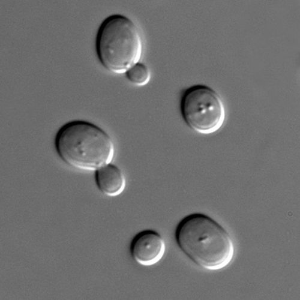<figcaption class="caption">These yeast cells are undergoing budding, a type of asexual reproduction. Can you see the smaller offspring 'budding' off the parent?</figcaption></figure><figure>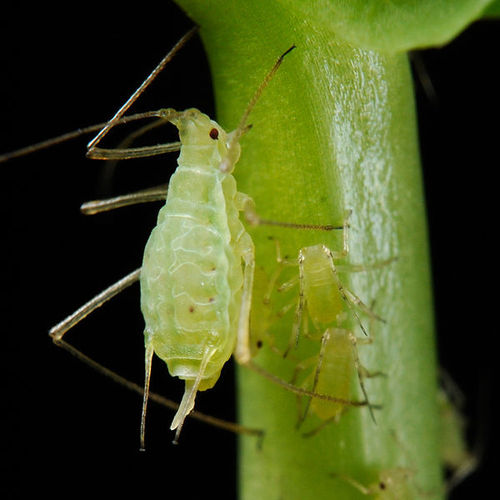<figcaption class="caption">A mother aphid with offspring which were produced asexually or sexually, depending on the conditions. <a href="http://en.wikipedia.org/wiki/File:Acyrthosiphon_pisum_%28pea_aphid%29-PLoS.jpg"> http://en.wikipedia.org/wiki/File:Acyrthosiphon_pisum_%28pea_aphid%29-PLoS.jpg </a></figcaption></figure><p/>
<div class="note  col-md-6" data-type="didyouknow">
<p>Some species are able to switch between asexual and sexual reproduction, depending on certain conditions, such as whether there is a mate available for sexual reproduction. Aphids are able to do this. This is called heterogamy.</p>
</div>
<p/>

<p>In this chapter we are going to learn about <strong>sexual reproduction</strong> where two parent organisms mate and their <strong>genetic information (DNA)</strong> combines to make offspring which look similar, but they are not identical. Sexual reproduction takes place in most plants and animals. We will look at flowering plants (angiosperms) as an example of sexual reproduction in plants and at human reproduction as an example of reproduction in animals.</p>
<div class="section"><h2 class="title" id="toc-id-1">Reproduction in angiosperms</h2><div class="teachers-guide">
<p>As an introduction to this section, remind learners of the diversity and classification of plants which was discussed in Chapter 2 and how angiosperms fit into the classification. CAPS suggests that learners grow a bean plant during this topic in order to observe the stages in the life cycle of angiosperm plants. It is recommended that learners plant their seeds during the first lesson.</p>
</div>
<p/>
<div class="note  col-md-6" data-type="newwords"><ul data-class="ListBulleted"><li>angiosperm</li>
<li>asexual reproduction</li>
<li>cell</li>
<li>fertilisation</li>
<li>fuse</li>
<li>genetic information (DNA)</li>
<li>mate</li>
<li>pollen</li>
<li>pollination</li>
<li>pollinator(s)</li>
<li>sexual reproduction</li>
</ul></div>
<p/>

<p>How do plants make new plants? In this chapter we will learn about how <strong>angiosperm</strong> plants reproduce. Sexual reproduction in angiosperms results in the formation of seeds. Under the right conditions, these seeds will germinate and grow into a new plant.</p>

<p/>
<div class="activity" data-type="Activity"><h1 class="title">Growing a bean plant</h1>
<p/>

<p><strong>MATERIALS:</strong></p>
<ul data-class="ListBulleted"><li>bean seed</li>
<li>paper towel, toilet paper or tissue</li>
<li>glass jar (or transparent plastic tub/ jar)</li>
<li>water</li>
<li>measuring tape or ruler</li>
</ul><p/>

<p><strong>INSTRUCTIONS:</strong></p>
<ol data-class="ListEnumerated"><li>Place some kitchen roll, toilet paper or tissue in your transparent jar.</li>
<li>Insert the bean into the paper and place it against the side of the jar so that you can observe the changes that occur.</li>
<li>Add a little bit of water so that the paper towel is damp.</li>
<li>Place in an area which gets sunlight.</li>
<li>Add a little sprinkling of water every day to keep the paper towel damp.</li>
<li>
<p>Each day, starting on the day that you plant your seed, measure the length of the bean or height of the bean plant and record it in the following table.</p>

        <table><tr><td><p><strong>Day</strong></p></td><td><p><strong>Height of plant (cm)</strong></p></td><td><p><strong>Comment/ notes</strong></p></td></tr><tr><td><p><strong>1</strong></p></td><td><p/></td><td><p/></td></tr><tr><td><p><strong>2</strong></p></td><td><p/></td><td><p/></td></tr><tr><td><p><strong>3</strong></p></td><td><p/></td><td><p/></td></tr><tr><td><p><strong>4</strong></p></td><td><p/></td><td><p/></td></tr><tr><td><p><strong>5</strong></p></td><td><p/></td><td><p/></td></tr><tr><td><p><strong>6</strong></p></td><td><p/></td><td><p/></td></tr><tr><td><p><strong>7</strong></p></td><td><p/></td><td><p/></td></tr><tr><td><p><strong>8</strong></p></td><td><p/></td><td><p/></td></tr><tr><td><p><strong>9</strong></p></td><td><p/></td><td><p/></td></tr><tr><td><p><strong>10</strong></p></td><td><p/></td><td><p/></td></tr><tr><td><p><strong>11</strong></p></td><td><p/></td><td><p/></td></tr><tr><td><p><strong>12</strong></p></td><td><p/></td><td><p/></td></tr><tr><td><p><strong>13</strong></p></td><td><p/></td><td><p/></td></tr><tr><td><p><strong>14</strong></p></td><td><p/></td><td><p/></td></tr></table></li>
<li>Take notes of your observations from day to day. For example, on what day did your bean start to grow roots? On what day did the stem sprout? When did you see the first leaf (or leaves)? How many were there and what did they look like?</li>
</ol><p><strong>QUESTIONS:</strong></p>
<div class="exercises"><div class="problemset"><div class="entry"><div class="problem">
<p>What is the term for when a seed starts to grow? </p><hr/></div><div class="solution">
<p/><p>Germination</p>
</div></div><div class="entry"><div class="problem">
<p>What are the requirements for a seed to grow? </p><hr/></div><div class="solution">
<p/><p>Moisture (water), warmth and light</p>
</div></div><div class="entry"><div class="problem">
<p>Use your table of measurement to draw a graph of plant growth (height) over the 14 days of your investigation. <br/><br/><br/><br/><br/><br/><br/><br/><br/><br/></p>
</div><div class="solution">
<p/><p>Learner-dependent answer</p>
</div></div></div></div>

<p/>
<div class="note  col-md-6" data-type="visit">
<p>Watch a bean plant germinate and grow.<a data-class="ExternalLink" href="http://bit.ly/14GGtYn">bit.ly/14GGtYn</a></p>
</div>
<p/>
</div>

<p/>

<p>Now let's learn how plants make seeds. In sexual reproduction, half of the male's and half of the female's genetic material (DNA) fuses (combines) to create a new individual with the combined genetic materials of the parent plants or animals. In most animals we can usually easily identify two sexes of animals: a male or a female animal, which each have male and female parts. In angiosperm<em>s,</em> the flowers are the sexual organs of the plant. The flowers produce male and female structures that can either be on the same plant or can be on two separate plants. Let us have a closer look at the structures of flowers.</p>
<div class="section"><h3 class="title" id="toc-id-2">Flower structures</h3><div class="note  col-md-6" data-type="newwords"><ul data-class="ListBulleted"><li>anther</li>
<li>embryo sac</li>
<li>filament</li>
<li>ovary</li>
<li>ovule</li>
<li>peduncle</li>
<li>petal(s)</li>
<li>pistil (carpel)</li>
<li>pollen</li>
<li>receptacle</li>
<li>sepal(s)</li>
<li>stamen</li>
<li>stigma</li>
<li>style</li>
</ul></div>
<p/>

<p>Flowers are the sexual organs of angiosperms. Many plants have both the male and female reproductive organs in the same flower although some may have male and female structures on different plants all together.</p>

<p/>
<div class="note  col-md-6" data-type="takenote">
<p>Plants can be broadly divided into gymnosperms and angiosperms. Remember that angiosperms produce flowers, and their seeds are within a fruit, whereas gymnosperms produce seeds in cones.</p>
</div>
<p/>

<p>Flowers come in many different shapes, sizes and colours, as in the photographs in the next activity illustrate, but there are components which can usually be identified in all flowers. These are:</p>
<ul data-class="ListBulleted"><li>peduncle</li>
<li>receptacle</li>
<li>petals</li>
<li>sepals</li>
<li>the male structures</li>
<li>the female structures</li>
</ul><p/>

<p>Flowers are typically set on a stem which may be long and rigid like a rose or agapanthas stem, or short and flexible like those on a petunia. The stalk or stem of a flower is called the <strong>peduncle</strong>.</p>

<p/>
<div class="note  col-md-6" data-type="didyouknow">
<p>Sunflowers are in fact composite flowers, made up of hundreds of individual flowers working together. The 'petals' are in fact individual flowers called ray florets and the centre is made of many disc florets. Each of these has a pistil and stamens.</p>
</div>
<p/>

<p>The <strong>receptacle</strong> is the top part of the flower stalk where the different flower parts attach.</p>

<p/>

<p>While the flower bud is forming, small green leaves protect and enclose the young bud. These are the <strong>sepals</strong>. The sepals are often green and look like small leaves, and since they are green they can also photosynthesise. Sometimes the sepals may be the same colour as the petals, like in lilies or tulips.</p>

<p/>

<p>Flower <strong>petals</strong> are usually the brightly coloured parts of the flower. They attract <strong>pollinators</strong>, such as insects and birds and also bats and mice. We will look more at <strong>pollination</strong> a bit later. In some plants the petals are very small and may even be absent. This is often because these flowers depend on the wind to carry the <strong>pollen</strong> away and therefore do not need petals to attract animals, such as grasses.</p>

<p/>
<figure>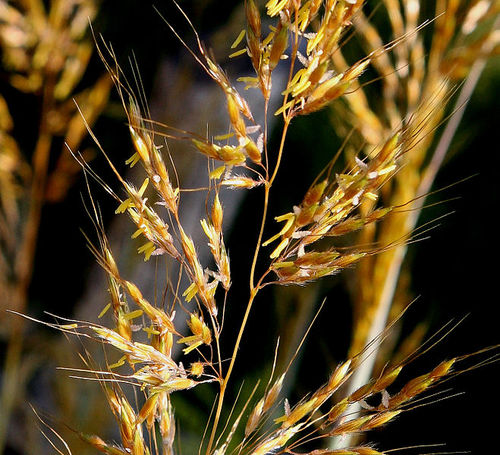<figcaption class="caption">Grass flowers.</figcaption></figure><p/>
<div class="activity" data-type="Activity"><h1 class="title">Identify the outer structures of flowers</h1>
<p/>
<figure><figcaption class="caption">Rose.</figcaption></figure><figure><figcaption class="caption">Water lilies.</figcaption></figure><figure><figcaption class="caption">Petunias.</figcaption></figure><p/>

<p><strong>QUESTIONS:</strong></p>
<div class="exercises"><div class="problemset"><div class="entry"><div class="problem">
<p>What do we call the part of the stalk where the flower petals and sepals attach to the flower stalk? </p><hr/></div><div class="solution">
<p/><p>Receptacle.</p>
</div></div><div class="entry"><div class="problem">
<p>Explain why the petals on some flowers are brightly coloured while on other plants we can hardly see the petals, and sometimes they are absent altogether. </p><hr/><hr/></div><div class="solution">
<p/><p>The brightly coloured petals attract pollinators. Plants pollinated by wind do not need to attract insects or animals to pollinate them and thus do not need brightly coloured petals. By not producing petals they can invest in producing more pollen instead.</p>
</div></div><div class="entry"><div class="problem">
<p>Study the photos of the different flowers above. Describe the outer structures of each of these flowers based on their peduncles (stalks) and receptacles, and their sepals and petals.</p>

          
          <table><tr><td><p>Rose</p></td><td><p/></td></tr><tr><td><p>Lily</p></td><td><p/></td></tr><tr><td><p>Petunias</p></td><td><p/></td></tr></table></div><div class="solution">
<p/><p/>

          <table><tr><td><p>Rose</p></td><td><p>Long straight peduncles (stalks) to hold the flowers high up to the sun; green sepals to protect the buds; flower petals are bright to attract pollinators</p></td></tr><tr><td><p>Lily</p></td><td><p>Long straight peduncle, which is underwater and less rigid than the sunflower so it can sway in the water; there is an inner layer of white petals, and the outer layer are actually white sepals, and not petals.</p></td></tr><tr><td><p>Petunias</p></td><td><p>Short peduncles that branch from a shrub; small green sepals, large pink petals to attract pollinators.</p></td></tr></table><p/>
</div></div></div></div>

<p/>
</div>

<p/>

<p>The structures of the flower that we have discussed here are on the outside. The reproductive structures of the flower are in the middle of the flower. Flowers can contain either male structures or female structures, or both.</p>
<div class="section"><h4 class="title">Male reproductive structures</h4><div class="teachers-guide">
<p>Cells have not yet been taught in Natural Sciences, but a general understanding is useful for this section to know what is meant when males and female sex cells are referred to. A note has been included in the margin about cells, and it will be beneficial to your class to introduce what cells are, even though they only formally study cells in Gr. 9 Life and Living.</p>
</div>
<p/>
<div class="note  col-md-6" data-type="takenote">
<p><strong>What are cells?</strong> Cells are the smallest building blocks of organisms. There are many different kinds of cells, for example, cheek cells, muscle cells and nerve cells in some animals; or leaf cells, root cells or petal cells in plants.</p>
</div>
<p/>

<p>In this section, we will be talking about sex cells. These are either male or female sex cells and only carry half the genetic material (DNA) of a typical cell. When these sex cells fuse the two halves from the male and the female organism make a new organism with the combined genetic material (DNA) from both.</p>

<p/>

<p>The <strong>stamen</strong> is the male part of the flower. There are two parts to the stamen: the <strong>anthers</strong> and the <strong>filaments</strong> on which the anthers rest.</p>

<p/>

<p>Anthers produce the pollen that contain the male reproductive sex cells. The male cells in the pollen is carried to the female sex cells and when they fuse they will create a seed which can grow into a new plant.</p>

<p/>

<p>Filaments are stalk-like structures that support the anthers. In some flowers the filaments may be long and in others relatively short.</p>
<figure><figcaption class="caption">The male structures are clearly seen in this close up photo of a flower with the anthers covered in pollen and supported by the stalk-like filaments. <a href="http://commons.wikimedia.org/wiki/File:GIPE25_-_Etamines_d-une_fleur_d-Amaryllis_%28by%29.jpg"> http://commons.wikimedia.org/wiki/File:GIPE25_-_Etamines_d-une_fleur_d-Amaryllis_%28by%29.jpg </a></figcaption></figure></div><div class="section"><h4 class="title">Female reproductive structures</h4>
<p/>

<p>The <strong>pistil</strong> is the female organ of the plant and is usually at the centre of the flower. It consists of a stigma, style and ovary. All the parts of the pistil work specifically to help the plant receive pollen, transport it and have it fertilise the <strong>ovules</strong> (that contain female sex cells). Ovules become seeds after <strong>fertilisation</strong>.</p>

<p/>
<div class="note  col-md-6" data-type="takenote">
<p>Each carpel consists of a stigma, style and ovary. Some flowers have one carpel, and some have many. Therefore in some flowers, the carpel and the pistil are the same thing, but in others, many carpels make up one pistil!</p>
</div>
<p/>

<p>The <strong>stigma</strong> is the structure that receives the pollen during pollination. It is on top of a long narrow style and when it is ready to receive pollen it becomes sticky providing a place for the pollen to stick to.</p>

<p/>

<p>The <strong>style</strong> is a long tube that connects the stigma with the ovary and the ovules. The style supports the stigma and holds it in the best possible position to receive the most pollen grains. After the pollen has landed on the stigma, the pollen grows long tubes called pollen tubes down through the style from the stigma to the ovules in the ovary.</p>

<p/>

<p>The <strong>ovary</strong> is the enlarged structure at the base of the pistil. It may be divided into different parts (or locules) and produces the ovules that contain the female reproductive sex cells. Within the ovule is the <strong>embryo sac</strong><em>.</em> The embryo or tiny seed will develop in here.</p>
<figure><figcaption class="caption">The female flowers parts making up the pistil.</figcaption></figure><p/>
<div class="activity" data-type="Activity"><h1 class="title">Flower dissection</h1>
<p/>

<p><strong>MATERIALS:</strong></p>
<ul data-class="ListBulleted"><li>dissecting needle</li>
<li>dissecting knife</li>
<li>petunia or hibiscus flowers</li>
</ul><div class="teachers-guide">
<p>Petunia or hibiscus flowers work best for a dissection, however, you can use any flowers from the gardens or surrounding area that you are able to find. You can watch the video of the flower dissection using a hibiscus flower in the visit link provided prior to your lesson so that you know how to do the dissection and guide learners.</p>
</div>
<p/>

<p><strong>INSTRUCTIONS:</strong></p>
<ol data-class="ListEnumerated"><li>Study the following diagram of a flower. Use your understanding of the <strong>outer structures</strong> of a flower to add the following labels: petal, sepal, receptacle and peduncle. Once we have done the dissection, we will come back to label the inner structures.</li>
</ol><div class="teachers-guide">
<p>Learners must make sure to label in the correct way, using a ruler to draw straight, parallel label lines pointing and touching the structure to be named. Take note that the receptacle label should point to the green bulge in between the sepals and the peduncle label must point to the short stalk at the bottom.</p>
</div><figure id="gd-idm2176880"></figure><div class="teachers-guide">
<p>A labelled diagram should look as follows:</p>
<figure id="gd-idm5512304"></figure><p/>
</div><ol data-class="ListEnumerated"><li>Go out into your garden or explore the school grounds and surroundings and select a flower of your own to dissect. If your teacher has petunias or hibiscus flowers, dissect one of those.<ol data-class="ListEnumerated"><li>First remove the outer sepals.</li>
<li>Then remove the petals. You have now exposed the ovary.</li>
<li>Identify the male and female structures. Label these on the diagram above.</li>
<li>Using your dissecting knife or scalpel, cut the ovary in half.</li>
<li>Use the dissecting needle to carefully open up the ovary. See if you can identify the ovules.</li>
<li>Label the ovary and ovule on the above diagram.</li>
</ol></li>
</ol><div class="note  col-md-6" data-type="visit">
<p>Watch a flower dissection.<a data-class="ExternalLink" href="http://bit.ly/15yql7o">bit.ly/15yql7o</a></p>
</div>
<p/>
</div>

<p/>

<p>Now that we have learnt about the structures of flowers, let us take a look at how flowers are pollinated.</p></div></div><div class="section"><h3 class="title" id="toc-id-3">Pollination</h3><div class="teachers-guide">
<p>Take note that learners may confuse the processes of pollination and seed dispersal.  Pollination is the process whereby the male pollen is transferred to the female stigma in order for fertilisation to take place. Seed dispersal occurs <em>after</em> fertilisation, and involves dispersal of the new seed (offspring) to a location where it will not compete with the parent plant.</p>
</div>
<p/>

<p>In order for a flowering plant to reproduce sexually, the male sex cells need to fuse (join) with the egg inside the ovules. The stamen produces pollen that contain the male sex cells. The pollen grains are usually very small - about the size of a speck of dust.</p>

<p/>
<figure><figcaption class="caption">This person's hand is covered in millions of tiny grains of pollen. <a href="http://www.flickr.com/photos/alastairvance/4498154629/"> http://www.flickr.com/photos/alastairvance/4498154629/ </a></figcaption></figure><figure><figcaption class="caption">A photograph of a variety of pollen grains from different plants taken under a very strong microscope. <a href="http://upload.wikimedia.org/wikipedia/commons/a/a4/Misc_pollen.jpg"> http://upload.wikimedia.org/wikipedia/commons/a/a4/Misc_pollen.jpg </a></figcaption></figure><div class="teachers-guide">
<p>The image of pollen here is taken using a scanning electron microscope. You can mention this to learners, but they will only formally learn about different microscopes in Gr. 9 Life and Living.</p>
</div>
<p/>
<div class="note  col-md-6" data-type="visit">
<p>Watch some fascinating videos about pollination<a data-class="ExternalLink" href="http://bit.ly/18dpxZf">bit.ly/18dpxZf</a> or <a data-class="ExternalLink" href="http://bit.ly/148pQjS">bit.ly/148pQjS</a></p>
</div>
<p/>

<p>Pollen from the stamen needs to be transferred to the stigma of the flower, either on the same plant or another plant of the same species. This process is called <strong>pollination</strong>. If pollination does not occur, there will be no fertilisation and the plant will not be able to produce seeds or fruit.</p>

<p/>

<p>Generally plants produce a large amount of pollen to maximise the chances of the pollen being transferred to as many different stigmas on as many different flowers (of the same species) as possible.</p>

<p/>
<figure><figcaption class="caption">Can you identify the stamens covered in pollen and the stigma in this hibiscus flower?</figcaption></figure><div class="teachers-guide">
<p>There are numerous stamens covered in yellow pollen and the four 'stalks' with rounded heads sticking out the top are the stigma.</p>
</div>
<p/>

<p>Pollination involves the pollen moving from the stamens to the stigma of the same or another flower. There are different ways that pollination of flowers can take place. For example, flowers can be pollinated with the help of the wind, water or animals. Angiosperm flowers have special adaptations which help a specific type of pollination. Let us look at some of these methods for pollination and how flowers are adapted to promote pollination.</p>

<p/>
<div class="note  col-md-6" data-type="takenote">
<p>An adaptation refers to the way a behaviour or particular structure of the plant has changed (evolved) over time to best perform its function.</p>
</div><div class="section"><h4 class="title">Pollination by animals</h4>
<p>Animals that pollinate flowers are called pollinators. These animals come to flowers to feed on the nectar produced by the flowers. As they are feeding, pollen sticks to their bodies. When they move on to the next flower to feed, some of the pollen rubs off onto the new flower parts. We call this process pollination.</p>
<figure>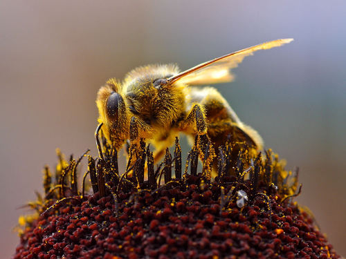<figcaption class="caption">Can you see this bee has been covered in pollen as it is feeding on the nectar? <a href="http://commons.wikimedia.org/wiki/File:Bees_Collecting_Pollen_2004-08-14.jpg"> http://commons.wikimedia.org/wiki/File:Bees_Collecting_Pollen_2004-08-14.jpg </a></figcaption></figure><p/>

<p>Since pollinators feed on specific plants, they usually travel from flower to flower of the same species, therefore pollinating them effectively.</p>

<p/>
<div class="activity" data-type="Activity"><h1 class="title">Identifying pollinators</h1>
<p/>

<p><strong>INSTRUCTIONS:</strong></p>
<div class="exercises"><div class="problemset"><div class="entry"><div class="problem">
<p>There are many different types of pollinators, some of which are shown below. Identify the pollinator in each photo in the table and write the name on the line below. Answer the questions that follow.</p>

	    <table class="too-large no-header"><tr><td><figure id="gd-idp1258464"></figure><p><a data-class="ExternalLink" href="http://www.flickr.com/photos/fsnorthernregion/6330342852/">http://www.flickr.com/photos/fsnorthernregion/6330342852/</a></p></td><td><figure id="gd-idp1227104"></figure><p><a data-class="ExternalLink" href="http://www.flickr.com/photos/dkeats/5845889189/">http://www.flickr.com/photos/dkeats/5845889189/</a></p>

                      
<p/></td></tr><tr><td><p/></td><td><p/></td></tr><tr><td><figure id="gd-idm6621168"></figure><p><a data-class="ExternalLink" href="http://www.flickr.com/photos/dejeuxx/6924771739/">http://www.flickr.com/photos/dejeuxx/6924771739/</a></p></td><td><figure id="gd-idm6460576"></figure><p><a data-class="ExternalLink" href="http://www.flickr.com/photos/col_and_tasha/4716336027/">http://www.flickr.com/photos/col_and_tasha/4716336027/</a></p></td></tr><tr><td><p/></td><td><p/></td></tr><tr><td><p/>

                      <figure id="gd-idp156768"></figure><p><a data-class="ExternalLink" href="http://www.flickr.com/photos/usdagov/7420019398/">http://www.flickr.com/photos/usdagov/7420019398/</a></p></td><td><figure id="gd-idm4531856"></figure><p><a data-class="ExternalLink" href="http://www.flickr.com/photos/shekgraham/127431519/">http://www.flickr.com/photos/shekgraham/127431519/</a></p>

                      
<p/></td></tr><tr><td><p/></td><td><p/></td></tr></table></div><div class="solution">
<p/><p/>

            <table><tr><td><figure id="gd-idp7673376"></figure><p><a data-class="ExternalLink" href="http://www.flickr.com/photos/fsnorthernregion/6330342852/">http://www.flickr.com/photos/fsnorthernregion/6330342852/</a></p></td><td><figure id="gd-idm4302384"></figure><p><a data-class="ExternalLink" href="http://www.flickr.com/photos/dkeats/5845889189/">http://www.flickr.com/photos/dkeats/5845889189/</a></p>

                      
<p/></td></tr><tr><td><p>Moth</p></td><td><p>Sunbird</p></td></tr><tr><td><figure id="gd-idp13611024"></figure><p><a data-class="ExternalLink" href="http://www.flickr.com/photos/dejeuxx/6924771739/">http://www.flickr.com/photos/dejeuxx/6924771739/</a></p></td><td><figure id="gd-idm1699904"></figure><p><a data-class="ExternalLink" href="http://www.flickr.com/photos/col_and_tasha/4716336027/">http://www.flickr.com/photos/col_and_tasha/4716336027/</a></p></td></tr><tr><td><p>Honey bee</p></td><td><p>Beetles</p></td></tr><tr><td><p/>

                      <figure id="gd-idm5885392">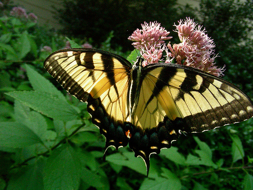</figure><p><a data-class="ExternalLink" href="http://www.flickr.com/photos/usdagov/7420019398/">http://www.flickr.com/photos/usdagov/7420019398/</a></p></td><td><figure id="gd-idm3252064"></figure><p><a data-class="ExternalLink" href="http://www.flickr.com/photos/shekgraham/127431519/">http://www.flickr.com/photos/shekgraham/127431519/</a></p>

                      
<p/></td></tr><tr><td><p>Butterfly</p></td><td><p>Bat feeds on nectar.</p></td></tr></table><p/>
</div></div></div></div>

<p/>

<p><strong>QUESTIONS:</strong></p>
<div class="exercises"><div class="problemset"><div class="entry"><div class="problem">
<p>What do you notice about most of these pollinators? (Which type of animal is most common?) </p><hr/></div><div class="solution">
<p/><p>They are mostly insects.</p>
</div></div><div class="entry"><div class="problem">
<p>What do you think these pollinators are getting from the flowers that they visit? </p><hr/></div><div class="solution">
<p/><p>These pollinators are mostly feeding on the nectar, and also on the pollen in some cases.</p>
</div></div><div class="entry"><div class="problem">
<p>What do you think attracts insects to flowers? In other words, how do you think flowers are adapted to attract pollinators to them? See if you can think of three adaptations and list them below. </p><hr/><hr/><hr/></div><div class="solution">
<p/><p>Flowers have large colourful petals to attract pollinators.</p>

            
<p>Flowers have sweet nectar for pollinators to feed on as a reward.</p>

            
<p>Flowers have a sweet scent to attract pollinators.</p>

	    
<p><strong>Note: </strong>A common misconception among learners is that they think flowers make pollen for the insects. Insects, such as bees, do collect the pollen and use it for the manufacture of the wax in their hives, but this is not why flowers make pollen. Also, flowers do not make nectar for the bees, rather you must stress that the nectar is made as a reward system for the pollinator.</p>
</div></div><div class="entry"><div class="problem">
<p>Flowers are also adapted so that when the pollinators visit them, they make sure the pollen rubs off onto the pollinator to be transferred to another flower. Look at the following image of a bird visiting a flower to drink nectar. How do you think this flower is adapted to make sure that it is pollinated by the bird?</p>

              <figure><figcaption class="caption">A bird drinking nectar from a flower. <a href="http://www.flickr.com/photos/sidm/6570554993/"> http://www.flickr.com/photos/sidm/6570554993/ </a></figcaption></figure><p/><hr/><hr/><hr/></div><div class="solution">
<p/><p>The flower is long and thin so that the bird has to stick its beak down the flower and then it will rub its head against the stamens containing the pollen. The stamens and stigma are long and sticking out the top of the flower so that they brush against the head of the bird when it is drinking nectar and the pollen then either sticks onto the bird's head or some from another flower is rubbed off onto this flower. The flower stem needs to be strong to support the bird.</p>
</div></div><div class="entry"><div class="problem">
<p>The following flower is called a Voodoo Lily. Unlike the flowers we have looked at so far which give off a sweet scent to attract pollinators, this flower gives off a really bad smell, like rotting meat or cow dung. The colour of the petals are also dark, like meat. This shows that different flowers have adapted to different pollinators. What types of pollinators do you think will pollinate this flower? Hint: Think of which insects you normally find when there is rotting food around.</p>
<figure>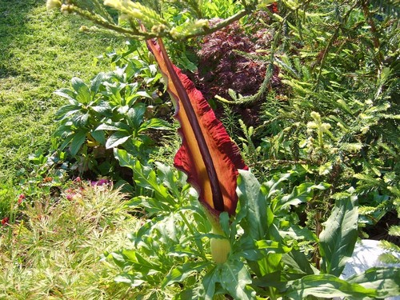<figcaption class="caption">A Voodoo Lily.</figcaption></figure><p/><hr/></div><div class="solution">
<p/><p>Flies are attracted to rotting meat and so the most likely pollinators of this flower are flies.</p>
</div></div><div class="entry"><div class="problem">
<p><strong>Work in pairs for the next 4 questions.</strong> Take a walk around your school and identify plants that you think are pollinated by pollinators. Make a drawing of at least 3 of these. <br/><br/><br/><br/><br/><br/><br/><br/></p>
</div><div class="solution">
<p/><p>Learner-dependent answer.</p>
</div></div><div class="entry"><div class="problem">
<p>Identify the common names of these plants and try to find the correct scientific name. </p><hr/><hr/><hr/></div><div class="solution">
<p/><p>Learner-dependent answer. <strong>Note: </strong>If possible, invite the school's maintenance personnel to help learners identify the names of these plants. Let them do an Internet search to find the scientific names or have gardening books available in class for them to search in.</p>
</div></div><div class="entry"><div class="problem">
<p>Explain how each of these plants' flowers have been adapted to be pollinated by pollinators. </p><hr/><hr/><hr/><hr/><hr/><hr/></div><div class="solution">
<p/><p>Learner-dependent answer. Learners might refer to the brightly coloured petals, strong scent, the specific length of the stigma, stamen, nectar pouch, etc.</p>
</div></div><div class="entry"><div class="problem">
<p>How could you easily distinguish which plants used pollinators to pollinate them? </p><hr/><hr/></div><div class="solution">
<p/><p>Learner-dependent answer. Answers should include an explanation that these plants have brightly coloured flowers to attract certain insects for example, a strong odour or perhaps a long nectar producing pouch.</p>
</div></div></div></div>

<p/>
</div>

<p/>
<div class="note  col-md-6" data-type="didyouknow">
<p>Some animals can only see certain colour ranges. Although butterflies, birds (and humans) can see red, bees cannot see red colours but they can see ultraviolet  (UV) rays. Some flowers especially adapt their petal colours for this to attract different insects.</p>
</div>
<p/>
<div class="note  col-md-6" data-type="didyouknow">
<p>There is a direct relationship between the length of the tongue or beak of the main pollinator and the length of the nectar pouch in the flower! This is a very good example of natural selection at play. You will learn more about that in the last chapter of this term's work.</p>
</div></div><div class="section"><h4 class="title">Pollination by wind and water</h4>
<p>Many flowers are pollinated by animals, as we discussed in the last section, but wind and water can also help pollination. Do you think plants that are pollinated by the wind or water need colourful, sweet-smelling flowers with nectar? Why do you think this?</p>

<p/>
<div class="teachers-guide">
<p>Before going through the next section with your learners, get them to first think about what the flowers of wind and water pollinated plants will look like and if they need the same or different adaptations to flowers that attract pollinators. For example, wind and water pollinated flowers do not need to attract animals so they do not need large, colourful flowers that emit scents. Wind pollinated plants will need large amounts of very light pollen that is easily wind-borne.</p>
</div>
<p/>

<p>There are some challenges that plants face if they rely on the wind or water for pollination. These plants have adapted to overcome these challenges so that they can be pollinated by the wind or water.</p>

<p/>
<div class="activity" data-type="Activity"><h1 class="title">Studying the flowers of wind and water pollinated plants</h1><div class="teachers-guide">
<p>Some images are supplied here, but if possible, collect some grass flowers beforehand and bring these to class. Alternatively, you could take a quick walk around the school to see if there are any grasses or reeds growing nearby with flowers that learners can observe. Learners can also do this in pairs and discuss their answers with each other before writing them down.</p>

<p/>

<p>Afterwards, go through the questions with the class. This activity relies on and teachers learners making observations with real plants and flowers. Learners must use what they have already learnt about the adaptations in plants whose flowers are pollinated by animals. This will enable them to make conclusions/deductions about the adaptations in wind-pollinated plants.</p>
</div>
<p/>

<p><strong>INSTRUCTIONS:</strong></p>
<ol data-class="ListEnumerated"><li>Study the following photos of the flowers of different types of grasses that are pollinated with the help of the wind.</li>
<li>Answer the questions which follow.</li>
</ol><p/>
<figure>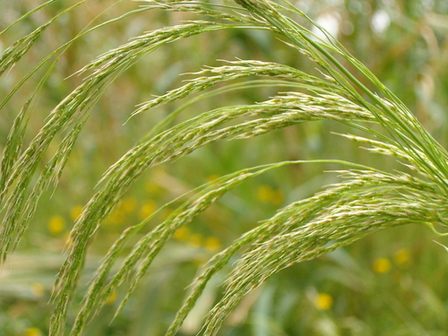<figcaption class="caption">In this grass plant you can see the small yellowish flowers attached to the green stem.</figcaption></figure><figure><figcaption class="caption">These white, feathery ends are the flowers of this grass.</figcaption></figure><figure><figcaption class="caption">Can you see the small, brown flowers sticking up from the maize plants? These are the male flowers of maize. <a href="http://www.flickr.com/photos/mrsdkrebs/5947866884/"> http://www.flickr.com/photos/mrsdkrebs/5947866884/ </a></figcaption></figure><figure>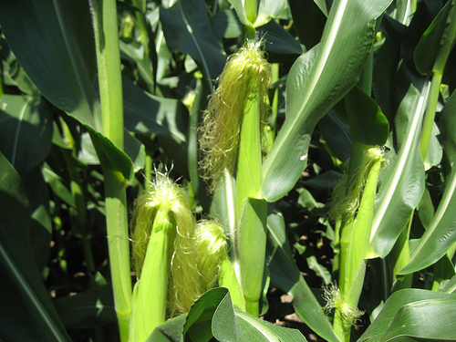<figcaption class="caption">This image shows the silky female flower of the maize plant. <a href="http://www.flickr.com/photos/mrsdkrebs/5947867990/"> http://www.flickr.com/photos/mrsdkrebs/5947867990/ </a></figcaption></figure><div class="teachers-guide">
<p>Shown here are the male and female flowers of the maize plant. If you wish to do so, you can discuss cross pollination with your learners, meaning that the pollen from one plant has to travel to the female flowers of another plant.</p>
</div>
<p/>

<p><strong>QUESTIONS:</strong></p>
<div class="exercises"><div class="problemset"><div class="entry"><div class="problem">
<p>Write a description of the flowers in the photos. Your description must show that you have observed the colour of the flowers, the size, the shape and how many there are on each plant. </p><hr/><hr/><hr/></div><div class="solution">
<p/><p>The flowers are not colourful like the flowers that are pollinated by animals. They are dull in colour (whites, browns and greens). The flowers are quite small, but there are many flowers per plant. The flowers are mostly long and slender and quite flimsy (loose). There are large number of anthers which hang out of the flower so the pollen can easily be swept away by the wind.</p>
</div></div><div class="entry"><div class="problem">
<p>Why do you think these flowers are not colourful like the flowers in the last activity? </p><hr/><hr/></div><div class="solution">
<p/><p>These flowers do not need to attract animals with their colourful petals as they rely on the wind for pollination.</p>
</div></div><div class="entry"><div class="problem">
<p>Do you think the flowers in wind pollinated plants produce nectar? Why do you say so? </p><hr/><hr/></div><div class="solution">
<p/><p>Generally these flowers do not produce nectar as they do not need to attract animals to feed on them in order to pollinate them. They rely on the wind.</p>
</div></div><div class="entry"><div class="problem">
<p>What types of plants are generally pollinated by the wind? </p><hr/></div><div class="solution">
<p/><p>Mostly grasses and reeds, and also many trees.</p>
</div></div><div class="entry"><div class="problem">
      
<p>The flowers in these photos generally produce a huge amount of pollen. They produce much more pollen compared to the flowers pollinated by animals. Why do you think this is so? Hint: Think of the chances of a flower being pollinated by an animal which visits it to drink nectar, compared to the chances of being pollinated by pollen that is carried in the wind. </p><hr/><hr/></div><div class="solution">
<p/><p>Learners may battle with this question so you could discuss it as a class.</p>


<p>These flowers produce large amount of pollen as they cannot predict which way the wind will blow, so the more pollen the greater the chances that pollen will land on other flowers when carried in the wind. In flowers that are pollinated by animals, the animals transfer the pollen directly from one flower to the next, so they can produce smaller amounts. In flowers that are wind pollinated, they have to rely on the chance that the wind will blow and that it will blow in the right direction. The more pollen there is the greater the chances of pollination.</p>

    
<p/>


<p><strong>Note:</strong> At this point you can also point out to learners that plants that are wind pollinated often grow in large populations where the huge numbers of plants increase the chances of these plants being pollinated (think of fields of grasses or reeds or forests of trees).</p>

      </div></div><div class="entry"><div class="problem">
<p>In animal pollinated flowers, the pollen is often sticky and clumps together. This is so that it sticks to the animal which is visiting the flower for nectar and can then be carried to the next flower. In wind pollinated flowers, the pollen is very different. The pollen is smooth and not sticky. It is also very light and small. Why do you think this is so? </p><hr/><hr/><hr/></div><div class="solution">
<p/><p>In wind pollinated flowers, the pollen needs to be carried by the wind as it blows. Therefore, the pollen cannot be sticky, otherwise it will not be blown off the flowers when the wind blows. it also must not clump or stick together otherwise it will not be carried in the wind. The smaller and lighter the pollen grains are, the further the wind can carry it.</p>
</div></div><div class="entry"><div class="problem">
<p>The structures of the male and female parts in wind pollinated and animal pollinated flowers are also different. For example, in wind pollinated plants, the stamens (male structures) often have much longer filaments and the anthers hang down and can move easily. The stigmas (female structures) are also often large and look like feathers, as you can see in the photos in this activity. How do you think these adaptations of the stamen and stigma help the flowers to be pollinated by the wind? </p><hr/><hr/><hr/><hr/></div><div class="solution">
<p/><p>The long filaments of the stamens enables the anthers to be exposed to the wind so that the can blow and move in the wind and easily release the pollen. The stamens are large and feather-like so that they can 'catch' the pollen in the air as it blows through. They are still light so that they can blow and wave around in the wind.</p>
</div></div><div class="entry"><div class="problem">
<p>Fill in the following table to compare the structures of wind pollinated plants and pollinator (animal) pollinated plants.</p>

            <table><tr><td><p><strong>Structure</strong></p></td><td><p><strong>Wind pollinated plants</strong></p></td><td><p><strong>Pollinator pollinated plants</strong></p></td></tr><tr><td><p>Petals</p></td><td><p/>

                      
<p/></td><td><p/></td></tr><tr><td><p>Scent</p></td><td><p/>

                      
<p/></td><td><p/></td></tr><tr><td><p>Nectar</p></td><td><p/>

                      
<p/></td><td><p/></td></tr><tr><td><p>Amount of pollen</p></td><td><p/>

                      
<p/></td><td><p/></td></tr><tr><td><p>Structure of pollen</p></td><td><p/>

                      
<p/></td><td><p/></td></tr><tr><td><p>Anthers</p></td><td><p/>

                      
<p/></td><td><p/></td></tr><tr><td><p>Stigma</p></td><td><p/>

                      
<p/></td><td><p/></td></tr></table></div><div class="solution">
<p/><p/>

            <table><tr><td><p><strong>Structure</strong></p></td><td><p><strong>Wind pollinated plants</strong></p></td><td><p><strong>Pollinator pollinated plants</strong></p></td></tr><tr><td><p>Petals</p></td><td><p>Very small or absent petals that may be brown or dull green - do not need to attract insects.</p></td><td><p>Large, brightly coloured petals to attract insects</p></td></tr><tr><td><p>Scent</p></td><td><p>No scent - do not need to attract insects.</p></td><td><p>Often specific scent to attract specific pollinator.</p></td></tr><tr><td><p>Nectar</p></td><td><p>No nectar - do not need to attract insects.</p></td><td><p>Many produce nectar to attract insects.</p></td></tr><tr><td><p>Amount of pollen</p></td><td><p>Very large quantities of pollen produced as there is a lot of wastage.</p></td><td><p>Smaller amounts of pollen produced because there is less wastage than in wind pollinated plants.</p></td></tr><tr><td><p>Structure of pollen</p></td><td><p>Pollen light and smooth to travel on the wind and not clump together.</p></td><td><p>Pollen often sticky or spiky to attach to pollinators.</p></td></tr><tr><td><p>Anthers</p></td><td><p>Anthers loosely attached and dangle down (mostly) to release pollen easily into the wind.</p></td><td><p>Anthers firmly placed inside flowers to brush against pollinators.</p></td></tr><tr><td><p>Stigma</p></td><td><p>Stigma is large and feather-like to filter the air and catch the drifting pollen.</p></td><td><p>Stigma is inside the flower where the pollinator will brush up against it and has a sticky coating that the pollen sticks to.</p></td></tr></table><p/>
</div></div></div></div>

<p/>
</div>

<p/>

<p>Plants that are pollinated with the help of water usually live in water. We say they are aquatic. When pollen is released it floats on the surface of the water. The stigmas of the receiving plant are generally close to the water surface. This is so that they can be pollinated when the pollen in the water washes up against them.</p></div><div class="section"><h4 class="title">Pollinators and us</h4>
<p>Pollinators play an extremely important role in the life cycle of flowering plants. These flowering plants include the crops that farmers grow for us to eat, such as maize and sunflowers. Since angiosperms produce a very large amount of the world's food crops, without pollinators, we would be without most of the food crops produced for us to eat.</p>

<p/>
<div class="note  col-md-6" data-type="visit">
<p>Watch this video about the mysterious disappearance of bees<a data-class="ExternalLink" href="http://bit.ly/195ITRh">bit.ly/195ITRh</a></p>
</div>
<p/>
<div class="activity" data-type="Activity"><h1 class="title">Article from "The Earth Times"</h1>
<p/>

<p><strong>INSTRUCTIONS:</strong></p>
<ol data-class="ListEnumerated"><li>Imagine it is the future - it is the year 2056!</li>
<li>Read the following article from a newspaper called "The Earth Times".</li>
<li>Answer the questions that follow.</li>
</ol><p/>
<table class="white"><tr><td><p><em>
                          <strong>Loss of pollinators lead to crop destruction - third year of famine</strong>
                        </em></p>

                      
<p/>

                      
<p><em>
                          <strong>23 May 2056</strong>
                        </em></p>

                      
<p/>

                      
<p>The loss of pollinators in Southern Africa, specifically wild bees and butterflies, has lead to further crop failures three years in a row. Very few viable seeds remain to plant the next crop. The next crops planted might be the last ones unless another means of pollination can be found.</p>

                      
<p/>

                      
<p>The entire region has been severely affected by the sudden death of large swarms of bees and butterflies in the past 5 years. Bees and butterflies, that were once so common, are almost extinct.</p>

                      
<p/>

                      
<p>One group of researchers have been working to preserve the last remaining colony of bees. It was found hidden away in the mountains of the Helderberg Nature Reserve. So far they report that the colony is doing well and have added 127 new worker bees this week. It is hoped more colonies will be found in other remote mountain regions.</p>

                      
<p/>

                      
<p>The researchers are still trying to identify the cause of the extinction of these insects. They think that the huge increase in air pollution and acid rain has affected the wings and flight of these insects. They are therefore not able to fly to food sources, such as the nectar of flowers, and then die.</p>

                      
<p/>

                      
<p>The lead researcher, Dr Wimple, has indicated that they have wild bee larvae from other parts of the world which were frozen several years ago to preserve them. The team is now close to reintroducing these bee larvae into the remaining colony. They hope this will increase the diversity of the population. Dr Wimple's team is working closely with other similar teams around the world to find a possible solution.</p>

                      
<p/>

                      
<p>The team is also looking at ways to modify the crop plants to increase how efficient they are at being pollinated by the wind, for example maize crop plants. They hope that this will increase the production of maize. They need to do this by changing the DNA of the existing crop plants. This is called genetic modification. "It's a long shot but one we hope will bear fruits" commented Dr Wimple.</p>

                      <figure></figure><p>Bees, and other pollinators, are dying due to air pollution. <a data-class="ExternalLink" href="http://www.flickr.com/photos/calxfornia/4664313683/">http://www.flickr.com/photos/calxfornia/4664313683/</a></p></td></tr></table><p/>

<p><strong>QUESTIONS:</strong></p>
<div class="exercises"><div class="problemset"><div class="entry"><div class="problem">
            
<p>Find the following words in the article and underline them. Then look up a definition for each word and write it down. Identify whether the word is a noun, verb, adverb or adjective. Do not copy the definition word for word, but write it in your own words.</p>
            
	    <ol data-class="ListEnumerated"><li>
<p>famine: </p><hr/></li>
<li>
<p>failure: </p><hr/></li>
<li>
<p>severely: </p><hr/></li>
<li>
<p>extinct: </p><hr/></li>
<li>
<p>preserve: </p><hr/></li>
<li>
<p>remote: </p><hr/></li>
<li>
<p>remote: </p><hr/></li>
<li>
<p>diversity: </p><hr/></li>
<li>
<p>modify: </p><hr/></li>
</ol></div><div class="solution">
<p/><ol data-class="ListEnumerated"><li>
<p>(noun) extreme hunger, starvation or lack (scarcity) of food.</p>
</li>
<li>
<p>(noun) when something does not work, and in this case, it specifically refers to crops which have produced a small amount or not produced at all</p>
</li>
<li>
<p>(adverb) very badly, or harshly</p>
</li>
<li>
<p>(adjective) the species has ended or died out, there are no more left</p>
</li>
<li>
<p>(verb) to keep something alive or make it last</p>
</li>
<li>
<p>(adjective) far away, out-of-the-way, away from human habitation</p>
</li>
<li>
<p>(noun) something that has variety and differences</p>
</li>
<li>
<p>(verb) to change</p>
</li>
</ol></div></div><div class="entry"><div class="problem">
<p>Write down the title of this article. </p><hr/></div><div class="solution">
<p/><p>Loss of pollinators lead to crop destruction - third year of famine</p>
</div></div><div class="entry"><div class="problem">
<p>What is the message that is brought across by the title and article? </p><hr/><hr/></div><div class="solution">
<p/><p>The loss of the wild bees, butterflies and moths has caused major food shortages because they usually help pollinate the food crops; the message might also be a warning to us to value our bee and butterfly populations more, and to reduce air pollution.</p>
</div></div><div class="entry"><div class="problem">
<p>Explain what the link is between the loss of pollinators and crop failures. </p><hr/><hr/><hr/></div><div class="solution">
<p/><p>The pollinators are not around to pollinate the flowers of the crop plants. Therefore, the flowers are not fertilised and can then not produce seeds. There are then no seeds to plant the next crops for the next year, and therefore there is less food for humans.</p>
</div></div><div class="entry"><div class="problem">
<p>Which specific pollinators were lost? </p><hr/></div><div class="solution">
<p/><p>Wild bees, butterflies and moths.</p>
</div></div><div class="entry"><div class="problem">
<p>What reason did the article provide for the loss of these pollinators? </p><hr/><hr/></div><div class="solution">
<p/><p>The air pollution and resulting acid rain damaged the wings of the pollinators, who could not fly to reach nectar and therefore died of starvation.</p>
</div></div><div class="entry"><div class="problem">
<p>Explain at least two ways in which wind pollinated plants' structures are adapted for wind pollination. </p><hr/><hr/><hr/><hr/></div><div class="solution">
<p/><p>Learners could mention:</p>

            <ul data-class="ListBulleted"><li>Anthers are carried on long filaments that hang down. This allows the wind to move and carry away the pollen easily.</li>
<li>Pollen grains are light and dry to prevent them clumping together and are easily carried on the wind.</li>
</ul><p>Female stigma is feathery and branched and acts as a filter trapping the pollen that is blown through it.</p>
</div></div><div class="entry"><div class="problem">
<p>How do you think the researchers could modify the crops' flowers so that they are able to be pollinated more efficiently by wind? </p><hr/><hr/><hr/></div><div class="solution">
<p/><p>Learner-dependent answer. Learners should make reference to the above adaptations in plants which are already adapted to be pollinated with the help of the wind.</p>
</div></div><div class="entry"><div class="problem">
<p>Do you think the situation described in this article could happen in the future? Write a paragraph where you explain your reason why. </p><hr/><hr/><hr/><hr/></div><div class="solution">
<p/><p>Learners can either agree or disagree that this could happen in the future. Their reasoning is important in this question. For example, they could reason that it might happen as there is already lots of air pollution and it is not decreasing so it could get to a level where it affects pollinators. Or else, they could say that they do not think air pollution will get to the level where it affects the flight of pollinators, or there could be other pollinators that might not be affected, etc.</p>
</div></div></div></div>

<p/>
</div>

<p/>
<div class="note  col-md-6" data-type="visit">
<p>Pollinators and us. (video)<a data-class="ExternalLink" href="http://bit.ly/14J8Ms6">bit.ly/14J8Ms6</a></p>
</div>
<p/></div></div><div class="section"><h3 class="title" id="toc-id-4">Fertilisation</h3><div class="note  col-md-6" data-type="newwords"><ul data-class="ListBulleted"><li>disperse</li>
<li>pollen tube</li>
</ul></div>
<p/>

<p>We have now looked at pollination, but what happens next? What happens after the pollen lands on the stigma of the flower?</p>

<p/>

<p>Do you remember that the pollen grains contain the male sex cells, and the ovary contains the ovules or female sex cells. The male and female sex cells each contains only half of the genetic material (DNA) from the parent plant. After pollination, the male sex cell in the pollen grain needs to fuse with a female sex cell in the ovary to produce a fertile seed. This is called fertilisation.</p>

<p/>

<p>In angiosperms, each pollen grain contains two male sex cells. See if you can identify the reason for this as you read through the steps for fertilisation.</p>

<p/>

<p>The process of fertilisation in plants occurs in clearly defined steps:</p>
<ol data-class="ListEnumerated"><li>After the pollen grain lands on the mature stigma of a flower from the same species, the pollen produces a tube.</li>
<li>
<p>This <strong>pollen tube</strong> starts to grow from the stigma and down the style. This transports the male sex cells to the ovules.</p>

            <figure>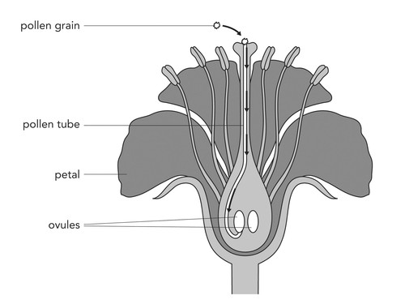<figcaption class="caption">The pollen tube growing down the style to the ovary.</figcaption></figure></li>
<li>There is a small structure inside the ovule called the <strong>embryo sac</strong>. When the pollen tube bursts into the ovule, one of the male sex cells fertilises the female sex cell in the embryo sac.</li>
<li>This fertilised egg develops into a seed.</li>
<li>The other male sex cell joins with another cell in the embryo sac to form the <strong>endosperm</strong>. The endosperm is the starchy food that is stored in the seed once it has ripened. Later this food is used to feed the germinating seed until it has formed leaves and can produce its own food through photosynthesis.</li>
<li>The ovary then starts to swell and enlarge, and becomes a fruit.</li>
</ol><p/>
<div class="note  col-md-6" data-type="visit">
<p>A simple animation of fertilisation.<a data-class="ExternalLink" href="http://bit.ly/17lTvt1">bit.ly/17lTvt1</a></p>
</div>
<p/>
<div class="note  col-md-6" data-type="takenote">
<p>An ovary can contain more than one ovule. If each ovule is fertilised, then the fruit will contain more than one seed. For example, think of an apple which has a few seeds inside the fruit.</p>
</div>
<p/>
<figure><figcaption class="caption">Can you see the pollen tubes growing here from individual pollen grains?</figcaption></figure><p/>
<div class="note  col-md-6" data-type="didyouknow">
<p>There is a difference between fruit and vegetables! <strong>Fruits</strong> are the ripened ovaries of flowering plants that contain seeds, such as tomatoes and oranges. <strong>Vegetables</strong> are produced by other parts of the plant, like the roots, stems, and leaves, such as carrots and cabbage.</p>
</div>
<p/>

<p>After fertilisation, the ovule inside the ovary starts to develop into a seed and the ovary wall becomes the rest of the fruit. There is huge variety in the types of seeds and fruit in the world.</p>

<p/>
<div class="note  col-md-6" data-type="didyouknow">
<p>The Coco de Mer seed is larger than the size of the human head!</p>
</div>
<p/>
<figure><figcaption class="caption">This is one seed from the Coco de Mer plant and it has been cut in half. <a href="http://www.flickr.com/photos/lindah/23347241/"> http://www.flickr.com/photos/lindah/23347241/ </a></figcaption></figure><figure>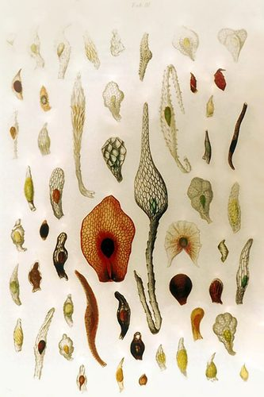<figcaption class="caption">Seeds from different orchid species. They are really small - like dust particles.</figcaption></figure><p/>

<p>Think about all the different fruits that you can buy in the shops - there are many different shapes, sizes and colours!</p>
<figure><figcaption class="caption">There are many colours, shapes and sizes of fruit!</figcaption></figure><p/>

<p>So why do plants have so many different kinds of seeds and fruit? This is because the seeds need to be spread to other areas to grow into a new plant. The shapes and structures of seeds help with this, and so too does the fruit. We say the fruit and seeds are <strong>dispersed</strong>. Let's look at some ways that seeds can be dispersed.</p></div><div class="section"><h3 class="title" id="toc-id-5">Seed dispersal</h3>
<p/>
<div class="note  col-md-6" data-type="newwords"><ul data-class="ListBulleted"><li>gravity</li>
</ul></div>
<p/>
<div class="note  col-md-6" data-type="visit">
<p>Interactive website on the life cycle of plants<a data-class="ExternalLink" href="http://bit.ly/15R4ZYX">bit.ly/15R4ZYX</a></p>
</div>
<p/>

<p>Plants use different methods to disperse their seeds as far from the parent plant as possible. Why do you think seeds need to be dispersed? Discuss this with your teacher and your class and take some notes. </p><hr/><hr/><hr/><div class="teachers-guide">
<p>Hold a class discussion on why do seeds need to be dispersed. Learners must be encouraged to take notes as they will have a question on this at the end of the chapter. They will need to refer back to this discussion to formulate their answer so it is important that they start to learn to take notes. You can even write down some of the main points on the board.</p>

<p>Some points for the discussion:</p>
<ul data-class="ListBulleted"><li>It is important that seeds are moved to different habitats than those directly around the parent plant.</li>
<li>If the seeds that are produced by the parent plant germinate and start to grow directly under it, in some cases it may replace aging plants, but in most cases it would be in direct competition with the parent plant for light, minerals and water.</li>
<li>When seeds grow too close to others, they grow long and spindly to reach enough light, making them weak and poor fruit producers.</li>
<li>Therefore, in order to avoid being in competition with the parent plant and to produce stronger plants, the seeds are dispersed away from the parent plant with the hope that they will land in a 'better' habitat where they will receive enough minerals, light and water.</li>
</ul><p/>
</div>
<p>Different plants have different ways of dispersing the seeds and fruit. Let's have a look at some of these.</p>

<p/>
<div class="note  col-md-6" data-type="visit">
<p>Watch a video that illustrates the different ways that plants can disperse seeds<a data-class="ExternalLink" href="http://bit.ly/178UyMS">bit.ly/178UyMS</a></p>
</div>
<p/>

<p><strong>Gravity</strong>: Fruit can fall off a tree and roll as far as possible from the parent tree. When the fruit has fallen it can then be taken further from the parent plant by water, by rolling along the ground or by animals.</p>

<p/>

<p><strong>Animals</strong>: Animals may eat the fruit from the plant or the fallen fruit, and carry the seeds in their digestive systems. The seeds have a tough outer covering so that they are not digested by the animal. Some seeds also have spiky structures that can stick to the fur of animals. They are then carried along as the animal walks and drop off later.</p>
<figure>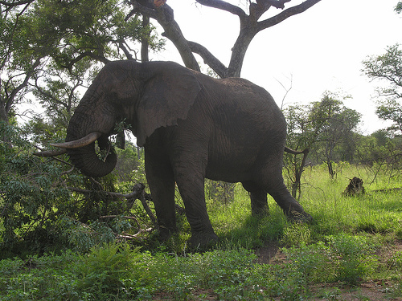<figcaption class="caption">Many wild animals love to eat the fruit from the marula tree, such as this elephant, which has pushed the tree over to get to the fruit. The seeds are dispersed later far away in the elephant's dung. <a href="http://www.flickr.com/photos/mister-e/394295611/"> http://www.flickr.com/photos/mister-e/394295611/ </a></figcaption></figure><p/>
<div class="note  col-md-6" data-type="didyouknow">
<p>The tiny hooks on seeds and burrs that stick to fur inspired the design of Velcro. One part of Velcro tape hooks into the other part of the Velcro tape just like seeds hook into fur.</p>
</div>
<p/>

<p><strong>Explosive force</strong>: In some plants their seed capsules mature and then 'explode', shooting the small, light seeds far away from the parent plant.</p>
<div class="teachers-guide">
<p>The cells along the opening are specially designed so they rip open with force. (Three thickened walls and one very thin wall.)</p>
</div><figure><figcaption class="caption">The seed pods of jewelweed (shown on the left) explode when they are touched (shown on the right) and shoot out the seeds to disperse them. <a href="http://www.flickr.com/photos/benimoto/1386672443/"> http://www.flickr.com/photos/benimoto/1386672443/ </a></figcaption></figure><p/>
<div class="note  col-md-6" data-type="didyouknow">
<p>The Sandbox tree that grows in the Amazon Rainforest can fling its seeds anything from 45 to 100 m away at speeds of up to 252 km/h!</p>
</div>
<p/>
<div class="note  col-md-6" data-type="visit">
<p>Video showing how ripe yellow woodsorrel pods explode to release their seeds<a data-class="ExternalLink" href="http://bit.ly/14Apbii">bit.ly/14Apbii</a></p>
</div>
<p/>

<p><strong>Wind</strong>: Wind dispersal requires very light, small seeds that can be carried on the wind. Some seeds have 'wings' like dandelion seeds that can be carried across great distances by the wind.</p>
<figure>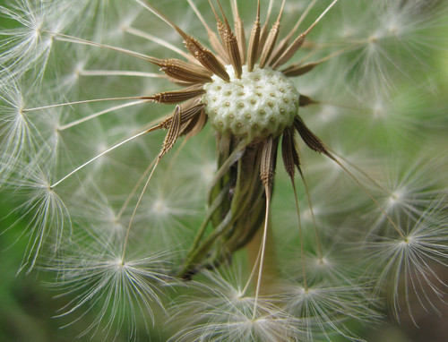<figcaption class="caption">Dandelion seeds are dispersed by the wind.</figcaption></figure><p/>

<p><strong>Water</strong>: Plants that grow in or near water use the water to disperse their seeds. Mangrove seeds start to germinate while still on the parent plant, then drop into the ocean and wait until the sea washes them onto a shore where they can continue germinating and growing.</p>
<figure><figcaption class="caption">A mangrove seed floating in the water.</figcaption></figure><p/>

<p>Do you remember how we spoke about the different flower structures and how they are adapted for pollination by either animals or wind or water? In the same way, the seeds and fruit are adapted for their method of dispersal.</p>

<p/>
<div class="note  col-md-6" data-type="visit">
<p>Review all of the different ways that plants can disperse their seeds<a data-class="ExternalLink" href="http://bit.ly/1bf1nzm">bit.ly/1bf1nzm</a></p>
</div>
<p/>
<div class="activity" data-type="Activity"><h1 class="title">Studying different kinds of seeds</h1><div class="teachers-guide">
<p>If possible, try collect some of these different seeds, pods and fruit before you do this activity and bring them to class for learners to look at. They can also try throwing up some of the seeds that are wind dispersed to see how they move through the air. This will help them understand the adaptations. Explain to your learners how they should explain how something is adapted and how this structure suits the function. The most common way to do this is to state the structure and then state why this structure helps the function. This normally takes the format of: The seed has 'x structure' <strong>so that</strong> it can do 'y function.'</p>
</div>
<p/>

<p><strong>INSTRUCTIONS:</strong></p>
<div class="exercises"><div class="problemset"><div class="entry"><div class="problem">
	    Look at the following table which contains different kinds of seeds. Each one is dispersed in a different way.</div><div class="solution">
<p/>
</div></div><div class="entry"><div class="problem">In the second column, state how the seed or seeds are dispersed (for example, by an animal, by the wind, by water etc.)</div><div class="solution">
<p/>
</div></div><div class="entry"><div class="problem">
<p>In the third column, write a couple sentences describing how you think this seed is adapted for dispersal. You need to think about what would most help this seed to be dispersed.</p>

          
           <table class="too-large"><tr><td><p><strong>Seed</strong></p></td><td><p><strong>How is it dispersed?</strong></p></td><td><p><strong>What adaptations does the seed or plant have for dispersal?</strong></p></td></tr><tr><td><figure id="gd-idp15536880"></figure></td><td><p/></td><td><p/></td></tr><tr><td><figure id="gd-idp3995696"></figure></td><td><p/></td><td><p/></td></tr><tr><td><figure id="gd-idm669632"></figure></td><td><p/></td><td><p/></td></tr><tr><td><figure id="gd-idm4694384"></figure></td><td><p/></td><td><p/></td></tr><tr><td><figure id="gd-idp5604192"></figure></td><td><p/></td><td><p/></td></tr><tr><td><figure id="gd-idp15774960"></figure></td><td><p/></td><td><p/></td></tr><tr><td><figure id="gd-idm2431296"></figure></td><td><p/></td><td><p/></td></tr><tr><td><figure id="gd-idm3465504"></figure></td><td><p/></td><td><p/></td></tr></table><p/>
</div><div class="solution">
<p/><table><tr><td><p><strong>Seed</strong></p></td><td><p><strong>How is it dispersed?</strong></p></td><td><p><strong>What adaptations does the seed or plant have for dispersal?</strong></p></td></tr><tr><td><figure id="gd-idm3550112"></figure></td><td><p>By an animal (bird)</p></td><td><p>The seeds are within fruit (berries) which the bird likes to eat. Therefore, when they bird eats the fruit, the seeds pass through the bird and are dispersed far away in the bird's droppings. The seeds are also adapted by having a hard outer coat which is not digested by the bird so they can pass through its system.</p></td></tr><tr><td><figure id="gd-idp16350720"></figure></td><td><p>By water</p></td><td><p>These trees normally grow near water so that when the seeds fall off, they fall into the water to be transported away. The seeds are adapted by being able to float (they are buoyant) so that they can travel down the river to a new place.</p></td></tr><tr><td><figure id="gd-idp11814192"></figure></td><td><p>By wind</p></td><td><p>The seed is very light so that it can blow in the wind. It is 'feathery' so that it catches the wind and can travel.</p></td></tr><tr><td><figure id="gd-idm6590144"></figure></td><td><p>By explosive force</p></td><td><p>This seed pod might respond to touch to cause the explosion. This is beneficial so that not all pods explode at the same time, but they do so in stages. The seeds are small and light so that they can travel when they are shot out of the pod.</p></td></tr><tr><td><figure id="gd-idp15020784"></figure></td><td><p>By an animal (dog)</p></td><td><p>These seeds have burrs (little hooks) so that they can catch onto the fur of the dog and attach to the dog. As the seed dries or it is brushed against something else, they fall off. The seeds are often in position on a plant so that they are at a height to brush against an animal.</p></td></tr><tr><td><figure id="gd-idp843088"></figure></td><td><p>By wind</p></td><td><p>These seeds are sometimes quite large, but still light so that they can travel through the air. The 'wings' are light and have a large surface area to catch the air and the seed spins as it moves through the air enabling it to travel further.</p></td></tr><tr><td><figure id="gd-idm5697744"></figure></td><td><p>By explosive force</p></td><td><p>These seed pods explode when they become dry and crack open. This makes sure the seeds are ready to be dispersed. The seeds are quite small to be able to travel.</p></td></tr><tr><td><figure id="gd-idp15049504"></figure></td><td><p>By an animal (squirrel)</p></td><td><p>Acorns are dispersed by squirrels who gather the nuts. The nuts are tasty to the squirrel so the animal collects them and carries them to another place to store them. Some acorns will be eaten, but others will be buried and forgotten by the squirrel and will germinate and start growing later on. Acorns are also hard so that they can last a long time in storage before getting the chance to germinate.</p></td></tr></table></div></div></div></div>
</div>

<p/>

<p>We have now finished looking at how angiosperm plants reproduce. We are now going to look at how animals reproduce. Specifically, we are going to look at how humans reproduce so that we can learn about our own bodies and how they function.</p></div></div><div class="section"><h2 class="title" id="toc-id-6">Human reproduction</h2><div class="teachers-guide">
<p>Be aware that learners might not feel comfortable discussing reproduction in the classroom, and might laugh or make inappropriate jokes to conceal their own discomfort.</p>

<p/>

<p><strong>Some tips for teaching human reproduction:</strong></p>
<ol data-class="ListEnumerated"><li>Respect your learners' questions and concerns. Some of them may not have had an opportunity before to ask questions about reproduction, especially if their parents have not felt comfortable discussing this with them. This is a sensitive topic, and learners might be embarrassed to ask questions. Encourage your learners to ask questions and not be inhibited or embarrassed.</li>
<li>Discuss processes openly so that learners are comfortable within the classroom environment to talk and learn about reproduction and how it influences their lives. Discourage and discipline any laughing or disrespectful behaviour from other students. Insist that learners use the appropriate scientific terms when asking questions and having discussions, as this should prevent some learners from being intentionally vulgar.</li>
<li>Possibly bring in a guest speaker. Learners might feel more comfortable asking a stranger questions. Also, if you bring in an expert, such as a gynaecologist or midwife, learners might take the subject more seriously. It may be helpful to have someone from FAMSA come in and talk to the learners. Trained FAMSA facilitators will divide the class into smaller groups so that it is easier to ask questions.</li>
<li>If necessary, you can separate boys and girls. For example, if you are showing a graphic video about the female reproductive organs, it might be useful to have the boy watch a similar video in another room that explains the male reproductive organs. It may be very helpful to divide the classes into boys and girls at least once during the section so that learners can feel comfortable asking questions that they do not feel comfortable asking in front of their opposite-sex classmates.</li>
<li>Avoid portraying the reproductive system in a negative light or "forbidden" as this will only add to some of the discomfort that learners might already feel. At this stage in their lives, learners are already very interested in reproduction and the changes that their bodies are going through. This is natural and should be embraced so that they are educated and can make informed choices about their sexual health going forward.        </li>
<li>Here is a website to do some further reading:<a data-class="ExternalLink" href="http://www.google.com/url?q=http%3A%2F%2Fezinearticles.com%2F%3FTeaching-Teens-About-the-Reproductive-System%26id%3D1471773&amp;sa=D&amp;sntz=1&amp;usg=AFQjCNGs8PlxebP5EtbvOrbsz6PVQn4uSA"/><a data-class="ExternalLink" href="http://bit.ly/1cfWcTS">bit.ly/1cfWcTS</a> and some extra resources and pdfs can be accessed at <a data-class="ExternalLink" href="http://bit.ly/19PWW09">bit.ly/19PWW09</a> </li>
</ol><p/>
</div><div class="note  col-md-6" data-type="newwords"><ul data-class="ListBulleted"><li>hormone</li>
<li>maturing</li>
<li>menstruation</li>
<li>penis</li>
<li>puberty</li>
<li>sperm</li>
</ul></div>
<p/>

<p>If you look around at your Gr. 7 classmates, you will probably notice that your friends, and you, have changed quite a bit since you started Gr. 1. Apart from growing taller, changing hairstyles or changing the way you dress, your bodies are changing and growing up. We say you are <strong>maturing</strong>.</p>

<p/>

<p>Understanding the changes that occur in your body and more specifically understanding why they occur, will help you to manage and cope in the next few years until you become a young adult.</p>

<p/>
<div class="teachers-guide">
<p>It may be useful before starting this section to have a box where learner's can put questions in advance of the lesson. Stress to learners that this is an anonymous exercise and that they do not need to identify themselves. You can then filter the questions in advance, and eliminate inappropriate questions, and also pick up on problem areas, misconceptions and concerns of some of the learners in the class who may be too shy to ask questions. You can then attempt to address these anonymous concerns while covering the material in this section. You can then ask the class in general what they might already know about human reproduction. Bear in mind that some learners might already know a significant amount, either from talking to their parents or from their own explorations, and some learners might not know much at all. You should point this out and let learners know that this is alright, and by the end of this section they will all know the basics of human reproduction. By asking them 
what they already might know, you are also encouraging them to start talking about it in class and not to be embarrassed or make jokes or tease each other. You can even ask some more basic questions, such as:</p>
<ul data-class="ListBulleted"><li>Why do humans need to reproduce? (To produce children to continue the existence of our species. This is different to asking why humans have sexual intercourse, which is also for enjoyment with your partner.)</li>
<li>Do you know how long pregnancy is before the baby is born? (9 months)</li>
<li>What is the stage in your life called when you go through physical and emotional changes as you become sexually mature? (puberty)</li>
</ul><p>Learners have a right to their privacy during this section. Teachers should also be aware and sensitive about possible victims of sexual abuse. It is also appropriate in this section to emphasise to girls in the class that is is perfectly okay to say "NO!" to persistent boys. Teachers should also encourage students to wait until they are older to become sexually active.</p>
</div><div class="section"><h3 class="title" id="toc-id-7">Why do humans need to reproduce?</h3>
<p>Humans need to reproduce to have children to continue the existence of our species. As with angiosperm plants, humans reproduce sexually. This means that human reproduction requires a male and a female and a new human being is formed by combining the genetic material (DNA) from the parents. The child will have half its genetic material (DNA) from its mother and half from its father. In order for this to happen, the <strong>sperm</strong> (from the male) has to combine with the <strong>egg cell</strong> (from the female) to produce a baby. Our sexual organs are adapted for these functions.</p>

<p/>

<p>Our sexual organs need to reach maturity. This takes place during a stage in our life called <strong>puberty</strong>.</p>

<p/></div><div class="section"><h3 class="title" id="toc-id-8">Puberty</h3>
<p>When a boy or girl reaches a certain point of growth and development, the sexual organs in the body also start to mature. Girls and boys do not, generally, go through puberty at exactly the same time:</p>
<ul data-class="ListBulleted"><li>Girls go through puberty between 10/11 - 14/15 years of age</li>
<li>Boys go through puberty between 12/13 - 15/16 years of age</li>
</ul><p>During puberty, you will experience different physical and emotional changes as your body develops towards sexual maturity and adulthood. Let's take a look at some of these changes that take place during puberty.</p>

<p/>
<div class="activity" data-type="Activity"><h1 class="title">What happens during puberty?</h1>
<p/>

<p><strong>INSTRUCTIONS:</strong></p>
<ol data-class="ListEnumerated"><li>
<p>Study the images above of a girl at 10, 12 and 17, and of a boy at 10, 12 and 17.</p>
</li>
</ol><p><strong>QUESTIONS:</strong></p>
<div class="exercises"><div class="problemset"><div class="entry"><div class="problem">
<p>Identify the changes that both go through during puberty and fill these into the table.</p>

         
<p/>

          <figure id="gd-idm6733024"></figure><figure id="gd-idm7563968"></figure><table><tr><td><p><strong>Changes in the girl</strong></p></td><td><p><strong>Changes in the boy</strong></p></td></tr><tr><td><p/>

                    
<p/>

                    
<p/>

                    
<p/>

                    
<p/>

                    
<p/>

                    
<p/></td><td><p/></td></tr></table></div><div class="solution">
<p/><p/>

          <table><tr><td><p><strong>Changes in the girl</strong></p></td><td><p><strong>Changes in the boy</strong></p></td></tr><tr><td><p>Changing body shape and figure</p>

                    
<p>Body fat increases</p>

                    
<p>Breasts start to develop</p>

                    
<p>Facial features more mature</p>

                    
<p>Hair growth under arms and on legs</p>

                    
<p>Pubic hair starts to grow</p>

                    
<p>(Acne / pimples in some individuals)</p></td><td><p>Changing body shape and figure</p>

                    
<p>More muscular</p>

                    
<p>Penis grows bigger</p>

                    
<p>Facial features more mature</p>

                    
<p>Hair growth under arms, legs, face, chest</p>

                    
<p>Pubic hair starts to grow</p>

                    
<p>(Acne / pimples in some individuals)</p></td></tr></table><p/>
</div></div><div class="entry"><div class="problem">
<p>Study the following graph and answer the questions that follow.</p>

	    <figure id="gd-idp4351392">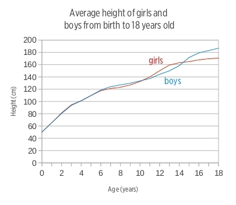</figure><p>What type of graph is this? </p><hr/></div><div class="solution">
<p/><p>A line graph (or a growth curve graph)</p>

	     
<p><strong>Note: </strong>Make sure that learners are aware that this graph displays an AVERAGE height. It does not just show a comparison between one girl and one boy, but rather takes the average height of a large group of girls and a large group of boys. Ask the learners why they think this is important. (There will always be a few exceptions of older people who are shorter than younger people, and girls who are taller than boys, but using the average helps us to see the general trend that occurs in most people.)</p>
</div></div><div class="entry"><div class="problem">
<p>What information is this graph providing? </p><hr/></div><div class="solution">
<p/><p>The average increase in height of boys and girls between birth and 18 years of age.</p>
</div></div><div class="entry"><div class="problem">
<p>In a graph, there are two variables. The independent variable is placed along the horizontal x-axis. The dependent variable is the variable that changes according to the independent variable. It goes along the vertical y-axis. Identify the independent variable and the dependent variable that was used in this study based on the graph. </p><hr/><hr/></div><div class="solution">
<p/><p>Independent variable: the age of the boys and girls</p>

          
<p>Dependent variable: average height increase</p>

	  
<p><strong>Note: </strong>You can explain to learners that the height depends on the age of the boys and girls and so the height is the dependent variable. As children grow older, they also grow taller, so height is dependent on age.</p>
</div></div><div class="entry"><div class="problem">
<p>What is the unit of measurement that height is recorded in? What is the unit of measurement for age? </p><hr/><hr/></div><div class="solution">
<p/><p>Height is measured in centimetres (cm) and age is measured in years.</p>


<p><strong>Note: </strong>Point out to learners that the axes of graphs must always have labels and if there is a unit of measurement, this must always be included in brackets after the heading.</p>
</div></div><div class="entry"><div class="problem">
<p>Explain in words what you think this graph is telling us about how boys and girls grow from 0 to 18 years old. Compare the two different lines for boys and girls and see what you can tell from the average heights as they grow older. Answer the following questions to help you interpret this graph.</p>

<ol data-class="ListEnumerated"><li>
<p>There are two lines on this graph. What does each line represent? Use the colours in your answer. </p><hr/><hr/></li>
<li>
<p>Why are the graph lines for boys and girls overlapping from 0 to 6 years old? What does this tell us about the height of boys and girls up until 6 years old? </p><hr/><hr/></li>
<li>
<p>After 6 years old, and until 10 years old, the graph lines for boys and girls split. Which line is on top? What does this tell you? </p><hr/><hr/></li>
<li>
<p>At what age are boys and girls on average the same height again? How can you tell this from the graph? </p><hr/><hr/></li>
<li>
<p>At age 18, are boys or girls generally taller? What is the average height of boys and of girls at 18 years old? Read this off the graph. </p><hr/><hr/><hr/></li>
</ol></div><div class="solution">
<p/><p><strong>Note: </strong>Interpreting graphs is a crucial skill in Natural Sciences. Learners might find it hard to explain what they are seeing in this graph, so go through the following steps in interpreting a graph.</p>

  <ol data-class="ListEnumerated"><li>The blue line represents the average change in height of boys as they grow older. The red line indicates the average change in height of girls as they grow older. </li>
<li>This means that boys and girls are on average the same height up until 6 years old. </li>
<li>The graph line for boys is on top. This tells us that between age 6 and 10 years old, boys are generally taller than girls. </li>
<li>Around age 10, boys and girls are roughly the same height again. This can be read from the graph where the two lines cross (we say they intersect). At around age 14 and a half, boys and girls are the same height again. </li>
<li>Boys are generally taller than girls at age 18. The average height of boys at 18 years is about 187 cm and the average height of girls is about 171 cm. </li>
</ol><p><strong>Note: </strong>You may need to help learners and show them how to read the values off the graph. They should use their rulers and draw a line across from 18 years old to the y-axis to see where it intersects and make an estimate of the height of boys and girls.</p>
</div></div><div class="entry"><div class="problem">
<p>A growth spurt is when children grow quite rapidly over the years, faster than over other years. Answer the following questions to help you understand this.</p>

  <ol data-class="ListEnumerated"><li>
<p>What can you use to identify a growth spurt in the graph? Hint: A growth spurt means that the boys' and girls' height is increasing faster than at other times.</p>

<p/><hr/></li>
<li>
<p>On the graph, we can see that there is a growth spurt for girls and a growth spurt for boys. Do the growth spurts take place at the same age for boys and girls? </p><hr/></li>
<li>
<p>At what ages do the growth spurts take place for boys and girls? </p><hr/><hr/></li>
<li>
<p>Why do you think these growth spurts took place when they did? Hint: Think back to the ages of puberty for boys and girls and how they differ. </p><hr/><hr/></li>
</ol></div><div class="solution">
<p/><ol data-class="ListEnumerated"><li>A sharp incline in the line of the graph indicates a growth spurt. </li>
<li>No. </li>
<li>Boys show a growth spurt between the ages of about 14 and 16. Girls show a growth spurt between the ages of about 11 and 13. </li>
<li>These growth spurts correspond to the ages when girls and boys go through puberty. Girls go through puberty slightly earlier than boys and so the growth spurts take place at different phases. </li>
</ol></div></div><div class="entry"><div class="problem">Make an X on the graph to indicate where you are in this process according to your age.</div><div class="solution">
<p/><p>Individual learners to mark this on the graph.</p>
</div></div><div class="entry"><div class="problem">
<p>Using the data on the graph, what changes in your height can you expect to experience if you were to follow the typical growth trend? </p><hr/><hr/></div><div class="solution">
<p/><p>Learner-dependent answer.</p>
</div></div><div class="entry"><div class="problem">
<p>Based on your family history and the height of other members of your family, predict whether you will 'follow the curve' or whether you will be shorter or taller than the average person your age? </p><hr/><hr/></div><div class="solution">
<p/><p>Learner-dependent answer.</p>
</div></div></div></div>
<div class="teachers-guide">
<p>If you wish to challenge the students, ask them if they think this trend will continue between the ages of 25 and 35? (No, height should remain stable), What do they think they trend will look like between 65 and 85 (Older individuals often lose a bit of height in old age as their vertebra compress (or curve)).</p>
</div>
<p/>
</div>

<p/>

<p>The following table summarises some of the physical changes that occur during puberty.</p>

<p/>
<table><tr><td><p><strong>Physical changes in girls during puberty</strong></p></td><td><p><strong>Physical changes in boys during puberty</strong></p></td></tr><tr><td><ul data-class="ListBulleted"><li>The <strong>sexual organs</strong> (vagina, uterus and ovaries) start to mature.</li>
<li><strong>Pubic hair</strong> starts to grow on the genitals.</li>
<li><strong>Menstruation and fertility</strong>: girls have their first menstrual bleeding. <strong>Menstruation</strong> is a sign that the ovaries have started secreting <strong>hormones</strong> and releasing eggs, and is therefore a sign that the girl is now fertile (able to fall pregnant).</li>
<li><strong>Body shape</strong>: changes occur, such as the waist becomes more defined and hips widen (to make space for childbirth). There is an increase in body fat.</li>
<li><strong>Breasts</strong> start to develop</li>
<li><strong>Body odour</strong> is typically part of puberty as the skin produces more oils and the smell of sweat changes.<strong/></li>
<li><strong>Acne and pimples</strong> can occur due to changes in hormones and increased oil secretion from the skin.</li>
</ul><p/></td><td><ul data-class="ListBulleted"><li>The <strong>sexual organs</strong> (testicles and penis)<strong/>start to mature.<strong/></li>
<li><strong>Pubic hair</strong> starts to grow on the genitals.</li>
<li><strong>Fertility</strong>: the testicles start to produce sperm that can fertilise a female egg during sexual intercourse.</li>
<li><strong>Body shape:</strong> changes occur as the bones and muscle increase to give the young man a stronger, more muscular look.</li>
<li><strong>Voice changes</strong> occur becoming deeper and lower.</li>
<li><strong>Body odour is</strong> typically part of puberty as the skin produces more oils and the smell of sweat changes.</li>
<li><strong>Acne and pimples</strong> can occur due to changes in hormones and increased oil secretion from the skin.</li>
</ul></td></tr></table><p/>
<div class="note  col-md-6" data-type="visit">
<p>Learn more about puberty for girls<a data-class="ExternalLink" href="http://bit.ly/13J6Pcd">bit.ly/13J6Pcd</a></p>
</div>
<p/>
<div class="note  col-md-6" data-type="visit">
<p>Learn more about puberty for boys<a data-class="ExternalLink" href="http://bit.ly/1cNfFZQ">bit.ly/1cNfFZQ</a></p>
</div>
<p/>

<p>During puberty, many young people have commented that their emotions are like a roller-coaster. This time in your lives is not only about growing up and maturing physically, but also emotionally.</p>

<p/>
<div class="teachers-guide">
<p>You should check with the Life Orientation teacher at your school about what learners are doing at this stage, particularly with reference to sexual maturity, emotional changes and becoming self-aware. Some of the things which learners will be experiencing are listed below. If time allows, you may wish to grant learners 10 minutes for self-reflection. Perhaps send them outside to sit by themselves in silence. After this self reflection exercise return to class and have a discussion. You may wish to discuss some of these topics:</p>
<ul data-class="ListBulleted"><li><strong>Strong feelings</strong>: puberty is for many a time when they move between very strong emotions; when these emotions last for more than a few minutes we call these 'moods'. Perhaps they feel excited and happy the one minute while they chat to friends but then walk home and arrive sombre, down and sad for no particular reason. This may lead to feelings of anxiety and frustration, which in turn leads to angry, emotional scenes with loved ones like parents or siblings. Since young people going through puberty are still learning how to deal with the many new feelings and emotions they are experiencing, they find this time particularly difficult. This might be alleviated as they learn to deal with conflict in a constructive way or they might choose to remove themselves from situations where they feel that there might be an emotional outburst that they cannot control.</li>
<li><strong>More sensitive</strong>: linked closely to the many new and perhaps uncomfortable feelings, young people going through puberty might be more sensitive to the actions and intentions of those around them and might often misread facial expressions. This often comes across as being 'over sensitive'. However, as they mature and learn to 'read' or interpret facial expressions and the body language of others more accurately young people soon become better at interpreting messages and understanding the hidden or figurative messages and learn how to respond to these in a more controlled manner.</li>
<li><strong>More self-conscious</strong>: some young people going through puberty and experiencing the different physical and emotional changes that this brings, are more self-conscious than others. They become more concerned with their physical appearance and tend to compare their bodies with those of famous celebrities, their friends and role models. If they do not look or sound the way they want to, this can affect the way they look at themselves and feel about themselves, what we call their self-esteem.</li>
<li><strong>Looking for new experiences</strong>: with the many physical changes being driven by the hormones in their bodies, young people going through puberty are more likely to look for new experiences and unknown 'paths' to explore. This may lead to dangerous, risk-taking behaviour that may put the young person's life in danger or derail their future plans. As they grow older, they start to learn to control these impulses and to make wiser decisions.</li>
<li><strong>Exploring their sexual identity</strong>: during this time young people start to form romantic relationships or go on 'dates'. Many young people prefer to wait until they are older to engage in sexual relationships. However, many others yearn for the thrill of a new experience and want to find out what sex is all about. It is therefore very important that they first make sure they know about the risks and take proper precautions to protect themselves (and their futures) if they do decide to have sex. (Which is one of the aims of this chapter!) </li>
</ul></div>
<p/>

<p>Many events are taking place in your life, so let's draw a timeline to show this!</p>

<p/>
<div class="activity" data-type="Activity"><h1 class="title">Draw a timeline of your life</h1><div class="teachers-guide">
<p>This can be a very <strong>sensitive task</strong> for learners to do, especially if they have suffered trauma in their lives. You must approach it sensitively and cautiously, making sure that learners feel comfortable with doing it. Some learners might also not want their timelines displayed, so this should be a personal activity for learners to do, without the pressure of having to display their timelines to the class.</p>
</div>
<p/>

<p>A timeline shows us a representation of how time passes and the events which take place. Look at the following timeline which shows how life developed on Earth. This is quite a complicated timeline.</p>

<p/>

<p><strong>INSTR INSTRUCTIONS:</strong></p>
<ol data-class="ListEnumerated"><li>Draw a personal timeline of your life so far.</li>
<li>You can include photos and pictures.</li>
<li>You can possibly include:</li>
<li>Your birth - where and when</li>
<li>Your first tooth, first word, first first step that you took, etc</li>
<li>Your different birthdays - perhaps you have some photos you can stick on for some of your birthdays.</li>
<li>Your first day at school, playing a team sport, on stage as a performer, etc</li>
<li>Celebrations and memorable events in your life.</li>
<li>Locate puberty on your timeline.</li>
</ol><p/>
</div>

<p/>

<p>Let us now take a closer look at the male and female reproductive organs that mature during puberty.</p></div><div class="section"><h3 class="title" id="toc-id-9">Human reproductive organs</h3><div class="note  col-md-6" data-type="newwords"><ul data-class="ListBulleted"><li>fallopian tube (oviduct)</li>
<li>ovary (ovaries)</li>
<li>ovulation</li>
<li>scrotum</li>
<li>testes</li>
<li>uterus</li>
<li>vagina</li>
</ul></div>
<p/>

<p>Puberty is a time when the human reproductive organs start to develop, maturing about 5 - 6 years after puberty started.</p>

<p/>

<p>In males, the reproductive organs include the penis and two <strong>testes</strong> hanging in a pouch or bag of skin called the <strong>scrotum</strong>.</p>
<ul data-class="ListBulleted"><li>At the start of puberty the scrotum starts to grow larger and pubic hair starts to appear. The penis also grows bigger.</li>
<li>Inside the scrotum, the testes mature and start to produce sperm.</li>
</ul><p/>

<p>When the male reproductive organs are mature in an adult, they will look as they do in the following diagram:</p>

<p/>
<figure id="gd-idp10747488"></figure><p/>

<p>The female reproductive organs include the <strong>vagina</strong>, <strong>uterus</strong>, two <strong>fallopian tubes</strong> (<strong>oviducts</strong>) and two ovaries.</p>
<ul data-class="ListBulleted"><li>Inside the girl's body the uterus becomes longer and the lining of the uterus becomes thicker.</li>
<li>When a girl is born she already carries millions of eggs (also called ova) in two organs called the ovaries. During puberty, the ovaries mature, and start to release one mature egg each month. This is called <strong>ovulation</strong>.</li>
<li>Two tubes connect the uterus with the ovaries - these are called the fallopian tubes or the oviducts.</li>
</ul><p/>

<p>When the female reproductive organs are mature in an adult, they will look as they do in the following diagram:</p>

<p/>
<figure id="gd-idm3820016"></figure><p>We now know more about the male and female sexual organs and how these organs mature during puberty. Let's take a closer look at human reproduction and the different stages.</p>

<p/></div><div class="section"><h3 class="title" id="toc-id-10">Different stages in human reproduction</h3><div class="note  col-md-6" data-type="newwords"><ul data-class="ListBulleted"><li>conception</li>
<li>ejaculate</li>
<li>sexual intercourse</li>
<li>umbilical cord</li>
</ul></div>
<p/>

<p>Although you are not ready for the responsibility of having a baby and parenthood, your body starts to prepare itself for reproduction during puberty. The main purpose of the human reproductive organs is to produce a mature sperm or egg that can fuse and create a new human baby.</p>
<div class="section"><h4 class="title">Ovulation</h4>
<p>Once a month, one of the ovaries in a girl or woman's body will release a mature egg into the fallopian tube (oviduct). From here it moves to the uterus. During this time the uterus develops a thick lining of blood in preparation for the possible arrival of a fertilised egg.</p>

<p/></div><div class="section"><h4 class="title">Fertilisation and pregnancy</h4>
<p>In order for a baby to develop in the mother's uterus, the egg needs to be fertilised. During <strong>sexual intercourse</strong>, the male <strong>ejaculates</strong> (releases) millions of sperm into the woman's vagina. From the vagina, the sperm travel into the uterus and up into the oviducts and to the egg cell.</p>

<p/>

<p>The sperm reach the egg cell, and only one of them enters through the outer layer of the egg cell. The layer then hardens and no other sperm are allowed to enter. This moment, when the male sperm and the female egg cell fuse is referred to as the moment of <strong>conception</strong>, or <strong>fertilisation</strong>, and this leads to pregnancy as the baby starts to develop.</p>

<p/>
<div class="note  col-md-6" data-type="takenote">
<p>You are 100% unique - there is no one like you on Earth!</p>
</div><figure><figcaption class="caption">Only one sperm will fertilise the egg cell. The other millions will not be able to enter.</figcaption></figure><p/>

<p>Once the egg cell is fertilised, it continues its journey to the uterus. When it arrives in the uterus, it is safely attached in the thick lining of the uterus. The foetus starts to grow and develop. An <strong>umbilical cord</strong> grows between the foetus and the uterus. A placenta forms to supply food and oxygen to the developing baby and to remove waste. The developing foetus receives food and oxygen from the mother through the placenta and umbilical cord.</p>

<p/>
<figure><figcaption class="caption">A baby developing inside the mother's uterus. Can you see the umbilical cord?</figcaption></figure><p/>
<div class="note  col-md-6" data-type="takenote">
<p>If the mother consumes drugs and alcohol while she is pregnant, these harmful substances will also pass through the placenta to the baby. They can cause serious damage to the baby. For example, if a pregnant mother drinks alcohol, the baby can develop Foetal Alcohol Syndrome (FAS).</p>
</div>
<p/>

<p>At the end of pregnancy, the mother gives birth to the baby through the vagina. Sometimes there are complications and the doctors perform a Caesarean section. this is a surgical procedure where a cut is made in the mother's abdomen and the baby is removed.</p>

<p/>

<p>As we have seen, if the egg is fertilised after sexual intercourse, the mother falls pregnant. But what happens to the egg if it is not fertilised?</p></div><div class="section"><h4 class="title">Menstruation</h4>
<p>After ovulation, if the egg in the oviduct does not fuse with a sperm and fertilisation does not take place, then the egg cell will still travel down to the uterus. But instead of implanting into the uterine wall, the unfertilised egg cell will be discarded through the vagina, together with the thick blood-rich uterus lining that had developed in case of fertilisation. This is called menstruation.</p>

<p/>

<p>Do you know what a myth is? A myth is a story that may or may not be true. Often, myths are quite old stories that are passed down from one generation to the next. Myths are often told and people believe them even when there is no proof that they are actually true.</p>

<p/>

<p>One such Greek myth is about a lady called Medusa. She had hair made of real snakes and could turn anyone into stone if they looked directly at her. One day, the hero Perseus fought her and rather looked at her reflection in his shield. He was protected from her deathly stare and managed to cut off her head and kill her.</p>

<p/>
<figure><figcaption class="caption">Do you think the myth about Medusa is true?</figcaption></figure><p/>

<p>There are many myths about menstruation and sex which are told by people in our society. A lot of these myths are not based on proof. Now that you know more about human reproduction, you need to decide if these stories and myths are true or not. Let's discuss this some more.</p>

<p/>
<div class="activity" data-type="Activity"><h1 class="title">Conduct a survey</h1><div class="teachers-guide">
<p>This should be done as a homework assignment in the lead up to the lesson about menstruation. The questions can then be answered in class and discussed.</p>
</div>
<p/>

<p><strong>INSTRUCTIONS:</strong></p>
<ol data-class="ListEnumerated"><li>Read some of the following comments people have made about menstruation and sex.</li>
<li>As a homework assignment, read these to at least five separate members of your family and friends.</li>
<li>Make a small cross if the person thinks it is not true and tick if they think it is true or correct.</li>
</ol><p/>
<table><tr><td><p><strong>Myth</strong></p></td><td><p><strong>Responses (tick or cross)</strong></p></td></tr><tr><td><p>"Women who are menstruating are dirty and unclean."</p></td><td><p/></td></tr><tr><td><p>"During your period you should never have cold food or walk with bare feet. If you get cold your period will be worse."</p></td><td><p/></td></tr><tr><td><p>"Exercise is bad for you when you menstruate."</p></td><td><p/></td></tr><tr><td><p>"Don't ever swim when you are having a period!"</p></td><td><p/></td></tr><tr><td><p>"Virgins cannot use tampons - they will lose their virginity."</p></td><td><p/></td></tr><tr><td><p>"It is unhealthy to have sex at the time of the month when you are menstruating."</p></td><td><p/></td></tr><tr><td><p>"You cannot fall pregnant during your period."</p></td><td><p/></td></tr><tr><td><p>"You cannot fall pregnant or make someone pregnant if you have sex in water."</p></td><td><p/></td></tr><tr><td><p>"Women are always moody and irrational during menstruation."</p></td><td><p/></td></tr><tr><td><p>"Drinking and drugs make sex more fun."</p></td><td><p/></td></tr><tr><td><p>"If you have a shower after sex, you will not fall pregnant."</p></td><td><p/></td></tr><tr><td><p>"You cannot fall pregnant if it is your first time."</p></td><td><p/></td></tr><tr><td><p>"Everyone is having sex."</p></td><td><p/></td></tr></table><p/>
<div class="note  col-md-6" data-type="takenote">
<p>A virgin is someone who has not had sexual intercourse.</p>
</div>
<p/>

<p><strong>QUESTIONS AND DISCUSSION:</strong></p>

<p/>
<div class="exercises"><div class="problemset"><div class="entry"><div class="problem">
<p>How many people in the homework survey believed that the comments were in fact true?</p>

                        <table><tr><td><p>Most believed they were true</p></td><td><p>About half believed they were true and the other half believed they were not.</p></td><td><p>None believed they were true</p></td></tr><tr><td><p/></td><td><p/></td><td><p/></td></tr></table></div><div class="solution">
<p/>
</div></div><div class="entry"><div class="problem">
<p>Discuss with your class which of the comments were most widely believed to be true by the people you surveyed. Take some notes on the following lines. </p><hr/><hr/><hr/><hr/></div><div class="solution">
<p/><p>Learner-dependent answer.</p>
</div></div><div class="entry"><div class="problem">
<p>Which of these comments had the strongest reaction from the people you surveyed? (Either positive or negative reaction.) Discuss their reactions with your class. Take some notes on the following lines. </p><hr/><hr/><hr/><hr/></div><div class="solution">
<p/><p>Learner-dependent answer.</p>
</div></div><div class="entry"><div class="problem">
<p>Did anyone laugh at any of the comments? Which ones? Did they tell you why they laughed? Share this with the class. </p><hr/><hr/></div><div class="solution">
<p/><p>Learner-dependent answer.</p>
</div></div><div class="entry"><div class="problem">
<p>Which of these statements do you think are true? Discuss this with your class and take some notes on the following lines. </p><hr/><hr/><hr/><hr/></div><div class="solution">
<p/><p>Learner-dependent answer.</p>
</div></div></div></div>

<p/>
<div class="teachers-guide">
<p>You should go through each of the myths to show that they are in fact all myths - they are NOT true. Read through these explanations and refer back to them during your discussion with your class.</p>

<p><strong>"Women who are menstruating are dirty and unclean ."</strong></p>
<ul data-class="ListBulleted"><li>Women are not dirty and unclean during menstruation as menstruation is a perfectly natural process. Some people do believe this for religious reasons and you should be sensitive to their religious beliefs, while still stating that women are not "dirty".</li>
</ul><p><strong>"During your period you should never have cold food or walk with bare feet. If you get cold your period will be worse."</strong></p>
<ul data-class="ListBulleted"><li>This is not true. The uterus is the organ that controls menstruation and cold feet or food have nothing to do with the uterus.</li>
</ul><p><strong>"Exercise is bad for you when you menstruate."</strong></p>
<ul data-class="ListBulleted"><li>Menstruation is a normal, natural function of the body and not in any way a disability. Therefore you should continue with life as if nothing out of the ordinary is going on.</li>
</ul><p><strong>"Don't ever swim when you're having a period!"</strong></p>
<ul data-class="ListBulleted"><li>If using the right protection (tampons) there is no reason why girls should not be able to swim while they are having their periods.</li>
</ul><p><strong>"Virgins can not use tampons - they will lose their virginity."</strong></p>
<ul data-class="ListBulleted"><li>Virginity is about whether a woman has had sexual intercourse or not. Long ago, a woman's virginity used to be assessed by whether her hymen was intact, as this breaks during sex. However, nowadays, there are many times in a girl's life when her hymen can break without having sex, such as by using a tampon or horseriding, or by doing gymnastics or ballet. This does not mean she has lost her virginity.</li>
</ul><p><strong>"It is unhealthy to have sex at the time of the month when you are menstruating."</strong></p>
<ul data-class="ListBulleted"><li>Although some people might find it off-putting, there is no medical reason why sex should be avoided. It is not unhealthy or unclean. It is the personal preference of the couple.</li>
</ul><p/>
</div><div class="teachers-guide">
<p/>

<p><strong>"You cannot fall pregnant during your period."</strong></p>
<ul data-class="ListBulleted"><li>There is a chance that you can get pregnant if you have sex during your period. Once in the vagina, sperm can stay alive for several days. That means that, even if the last time you had sex was three days ago during your period, you could now be ovulating and therefore you could get pregnant.</li>
</ul><p><strong>"You cannot fall pregnant or make someone pregnant if you have sex in water."</strong></p>
<ul data-class="ListBulleted"><li>This is not true. The water does not in any way prevent pregnancy, or the spread of STDs.</li>
</ul><p><strong>"Women are always moody and irrational during menstruation."</strong></p>
<ul data-class="ListBulleted"><li>Many women (not all) experience different pre-menstrual syndrome symptoms, which can include emotional changes, but this is not always so, and a woman's mood or emotional state should not automatically be attributed to PMS. After all, teenage boys can be similarly moody and emotional.</li>
</ul><p><strong> "Drinking and drugs make sex more fun."</strong></p>
<ul data-class="ListBulleted"><li>If you are drunk or on drugs, it is hard to make good decisions about sex. 20% of 15 to 17 year-olds say they have done something sexual while using alcohol or drugs that they might not have done if they were sober. At the time, it may seem like fun and a good idea, but it also means you are much less likely to practice safe sex and could then fall pregnant or contract an STD. Being under the influence of drugs or alcohol also makes girls more vulnerable to unwanted approaches.</li>
</ul><p><strong>"If you have a shower after sex, you will not fall pregnant."</strong></p>
<ul data-class="ListBulleted"><li>This is not true. The water will not 'wash off' the sperm. The sperm have already entered the vagina. As with STDs, showering after sex will not prevent pregnancy nor the transmission of STDs.</li>
</ul><p><strong>"You cannot fall pregnant if it is your first time."</strong></p>
<ul data-class="ListBulleted"><li>If you are ovulating, it does not matter if it is the first time you have sex, you can still fall pregnant. if your body has produced an egg during ovulation there is no reason why sperm will not fertilise the egg and result in pregnancy, even if it is the first time you are having sex.  </li>
</ul><p/>
</div><div class="teachers-guide">
<p/>

<p><strong>"Everyone is having sex."</strong></p>
<ul data-class="ListBulleted"><li>To learners it may seem like everyone is having sex, but in reality, less than half (48%) of all high school students have ever had sex. Point out to learners that people often lie and exaggerate when it comes to sex. But, also point out that in the end it does not matter what others are doing and who is telling the truth or not, it matters what is best for you. Partners may apply pressure by saying things like "If you love me, you will". However, a truly loving and committed partner will wait until you are ready.</li>
</ul><p/>

<p>At the end of this lesson, you should make a point of discussing derogatory words that are used with reference to women and men. It might be useful to brainstorm bad name choices and to discuss the use of the correct terminology to avoid this.</p>

<p/>

<p>If there are different cultural and religious groups in the class, it might be an opportune time to discuss religious laws and views on menstruation and what girls in the class experience as part of this group. However teachers should be very careful to not degrade or embarrass girls that act in accordance to the religious beliefs of their families but should instead create an open and caring space where learners can discuss this.</p>
</div>
<p/>
</div></div></div><div class="section"><h3 class="title" id="toc-id-11">Ways to prevent pregnancy and STDs</h3>
<p/>

<p>As we discussed above, your body prepares itself to reproduce during puberty. However, you are in control of your body and can make the decision when you are ready to become a parent and to fall pregnant.</p>

<p/>

<p>If you decide to become sexually active, it is important to think very carefully of two risks involved in sexual activity:</p>
<ol data-class="ListEnumerated"><li>Pregnancy</li>
<li>Being infected by a Sexually Transmitted Disease (STD) like HIV/AIDS, Herpes or Syphilis.</li>
</ol><div class="teachers-guide">
<p>Teenagers may be more frightened by a possible pregnancy than by contracting a STD. This is a sad fact, as some STDs are incurable and life-threatening. It is useful to point out to learners in this section, that hormonal contraceptive pills DO NOT protect against STDs and that a mistake made when they are young may affect the rest of their lives.</p>
</div>
<p>There are different things that you can do to prevent pregnancy.</p>
<div class="section"><h4 class="title">Contraceptives</h4>
<p>To avoid falling pregnant, you can use <strong>contraceptives</strong>. There are different contraceptives available today. They prevent the sperm from reaching the egg and thus prevent fertilisation from taking place. Or else, they can prevent the fertilised egg from implanting in the uterus wall.</p>

<p/>
<div class="note  col-md-6" data-type="takenote">
<p>'Contra-' means against, so contraception means against conception</p>
</div>
<p/>

<p><strong>Male condoms</strong> are rubbery sheaths that are placed over a man's erect penis before sex, and are worn during sexual intercourse to prevent the sperm from entering the woman's vagina. Condoms also help to prevent the spread of STDs.</p>
<figure id="gd-idm7168592">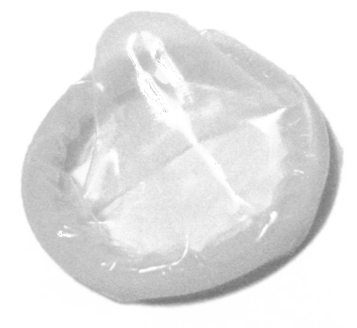</figure><p><strong>Female condoms</strong> also prevent the sperm from reaching the egg. However these are placed in a woman's vagina to act as a barrier to the sperm, and are much less commonly used.</p>

<p/>

<p><strong>Oral contraceptive pills</strong> are used by many women today. Many of these prevent ovulation. Pills need to be taken at the same time every day, otherwise they are not effective. If the woman has an infection with a high temperature, or is on antibiotics, this may also reduce the pill's effectiveness. While the pill is excellent at preventing pregnancy, it offers NO protection against STDs.</p>
<figure id="gd-idp14682864"></figure><p/></div><div class="section"><h4 class="title">Sexually Transmitted Diseases (STDs)</h4>
<p>There are various very dangerous and harmful diseases that are spread from one person to another during sexual intercourse. Some of these are life-threatening, like the Human Immunodeficiency Virus (HIV), while others cause very painful and long-term symptoms.</p>

<p/>

<p>You can prevent yourself from being infected with an STD by doing the following:</p>
<ul data-class="ListBulleted"><li>Get the facts: Make sure you know up-to-date information about STDs and how they are spread, their symptoms and how you can protect yourself during sexual intercourse.</li>
<li>Take control of your sex life: The more sexual partners you have, the higher your risk will be of contracting an STD.</li>
<li>Be faithful: If you or your partner has sex with someone else you risk infecting the other person with the STD.</li>
<li>Using condoms significantly reduces the risk of contracting STDs.</li>
</ul><div class="teachers-guide">
<p>You may want to point out to learners that due to the way that STDs are transmitted from person to person, when having sexual intercourse with a partner you are putting yourself at risk of catching disease from them, or ANY of their previous sexual partners, who in turn could have contracted an STD from any of their sexual partners etc.</p>
</div>
<p>It is your decision whether you want to participate in sexual intercourse with a romantic partner or not. There are two very important points to remember here:</p>

<p/>
<ol data-class="ListEnumerated"><li>No one, no matter who they are, has the right to force you or pressure you to have sex with them or with anyone else. Therefore you are the only one who should be permitted to decide when you are ready to have a sexual relationship.</li>
</ol><div class="teachers-guide">
<p>Emphasise to learners that if someone is forcing you to have sex with them or threatening you in any way to have sex with someone else, you have the right to say no. Our country's constitution protects your right to say no. If this is happening to you, go and speak to someone you trust and ask them to help you solve the problem.</p>
</div><ol data-class="ListEnumerated"><li>If you decide to have sex, you should do so in a responsible manner. This includes protecting yourself against possible pregnancy and against any STD infection.</li>
</ol><div class="teachers-guide">
<p>Emphasise to learners that when you decide that you want to have sex with someone, go and speak to a medical professional like the sister at your local clinic or the health care professional that works at the pharmacy. They will help you get the correct contraceptives and protection that you need. Emphasise that it is not only boys who can carry condoms. Girls can carry condoms too. If girls have condoms available, then they can INSIST on using protection.</p>
</div>
<p/>
<div class="note  col-md-6" data-type="takenote">
<p>If you have been a victim of sexual abuse you can receive guidance and help by contacting Lifeline at 0800 150 150. The Lifeline website for victims of sexual abuse can be found at<a data-class="ExternalLink" href="http://www.lifeline.co.za/need-support/rape/">http://www.lifeline.co.za/need-support/rape/</a>.</p>
</div>
<p/>
<div class="activity" data-type="Activity"><h1 class="title">Write a letter</h1><div class="teachers-guide">
<p>This activity is designed to empower the learners to take charge of their own sexual health. This is therefore a very personal activity and should not be for assessment purposes. Learners may choose to keep their letters entirely private.</p>
</div>
<p>So often we make promises to other people and work very hard to keep them, but when we make promises to ourselves we often neglect to honour these.</p>

<p/>

<p>Write a letter to yourself in which you explain what you want to do with regards to sexual activity. Do you want to engage in sex or do you want to wait until you are older? Explain why you made this decision.</p>

<p/>

<p>Then add to your letter what you promise yourself that you will do to protect yourself from contracting an STD or from a pregnancy before you are ready to be a parent. Explain how you see yourself practising responsible choices regarding sex.</p>

<p/>

<p>Put your letter in a safe place at home where you can often see it to remind yourself of your promise to yourself. Remember this is a private letter and you can choose whether you want to show it to anyone else or not.</p>

<p/>
</div></div></div></div><div class="section"><h2 class="title" id="toc-id-12">Summary</h2><div class="note  col-md-10" data-type="keyconcepts"><ul data-class="ListBulleted"><li>Sexual reproduction occurs when a sperm and an egg from two people combine to make offspring which look similar but not identical to the parents.</li>
<li>In angiosperm plants, seeds are produced in the flowers.</li>
<li>The male structures of flowers are the anthers and filaments, making up the stamens.</li>
<li>The female structures of a flower are the stigma, style and ovary, forming the pistil.</li>
<li>Pollination occurs when pollen is transferred from the anther of one flower to the stigma of another flower of the same species.</li>
<li>Pollination is assisted by animals (pollinators), the wind and/ or water.</li>
<li>Pollinators play an important role in the production of crops for humans.</li>
<li>The pollen grows a pollen tube down the style to deliver the pollen nucleus to the ovules in the ovary.</li>
<li>The fertilised ovules become seeds and the ovary may swell to form a fruit.</li>
<li>Seeds are dispersed in various ways by animals, the wind, water and explosive force.</li>
<li>In humans the main purpose of reproduction is for the sperm and egg to fuse and develop into a baby during pregnancy.</li>
<li>Puberty is the stage in the human life cycle when sexual organs mature for reproduction.</li>
<li>During puberty, boys and girls experience physical and emotional changes.</li>
<li>The male reproductive organs include the penis and testes that produce sperm.</li>
<li>The female reproductive organs include the vagina, uterus, oviducts and the ovaries.</li>
<li>The ovaries produce one mature egg each month during ovulation which is then transported to the oviduct.</li>
<li>If sexual intercourse takes place, the sperm travel to the egg and one will fuse with it in the process of fertilisation.</li>
<li>The fertilised egg then moves to the uterus, is embedded in the lining of the uterus and grows for approximately 9 months before the baby is born.</li>
<li>If fertilisation does not take place the egg moves to the uterus from where it is discarded in the vagina. The uterus lining is broken up and discarded through the vagina during menstruation.</li>
<li>Pregnancy and STDs can be prevented mostly by wearing a male condom.</li>
</ul></div>
<p/>

<p>Concept map</p>

<p/>

<p>Study the concept map below. Does it make sense to you? Are you starting to see what concept maps do? To complete the concept map below, fill in the blank spot. Look at the concept it is linked to in order to find the answer: 'In humans, fertilisation is prevented by &#8230;....'</p>

<p/>
<figure id="gd-idp4035408">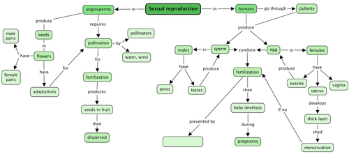</figure><div class="teachers-guide">
<p>Teacher's version</p>
<figure id="gd-idp2899408"></figure><p/>
</div></div><div class="activity" data-type="Revision"><h1 class="title">Revision questions</h1>
<p/>
<div class="exercises"><div class="problemset"><div class="entry"><div class="problem">
<p>Study the following diagram of a flower and the reproductive parts. Provide labels for numbers 1-12. [12 marks]</p>

                <figure id="gd-idp1339360"></figure><table><tr><td><p>1:</p></td><td><p>7:</p></td></tr><tr><td><p>2:</p></td><td><p>8:</p></td></tr><tr><td><p>3:</p></td><td><p>9:</p></td></tr><tr><td><p>4:</p></td><td><p>10:</p></td></tr><tr><td><p>5:</p></td><td><p>11:</p></td></tr><tr><td><p>6:</p></td><td><p>4 and 10:</p></td></tr></table></div><div class="solution">
<p/><table><tr><td><p>1: petal</p></td><td><p>7: sepal</p></td></tr><tr><td><p>2: stigma</p></td><td><p>8: ovules</p></td></tr><tr><td><p>3: style</p></td><td><p>9: ovary</p></td></tr><tr><td><p>4: filament</p></td><td><p>10: anther</p></td></tr><tr><td><p>5: receptacle</p></td><td><p>11: pollen grain</p></td></tr><tr><td><p>6: peduncle</p></td><td><p>4 + 10: stamen</p></td></tr></table></div></div><div class="entry"><div class="problem">
<p>Describe the function of the following structures: [5 marks]</p>

            
<p/>

        <table><tr><td><p><strong>Structure</strong></p></td><td><p><strong>Function</strong></p></td></tr><tr><td><p>petal</p></td><td><p/></td></tr><tr><td><p>ovules</p></td><td><p/></td></tr><tr><td><p>pollen grains</p></td><td><p/></td></tr><tr><td><p>filament</p></td><td><p/></td></tr><tr><td><p>receptacle</p></td><td><p/></td></tr></table></div><div class="solution">
<p/><p/>

        <table><tr><td><p><strong>Structure</strong></p></td><td><p><strong>Function</strong></p></td></tr><tr><td><p>petal</p></td><td><p>bright coloured structure that attracts pollinators</p></td></tr><tr><td><p>ovules</p></td><td><p>the part of the ovary of the flower that contains the female sex cell and that becomes the seed after fertilisation</p></td></tr><tr><td><p>pollen grains</p></td><td><p>fine powdery substance that contains the male sex cells that are transported to the stigma, and burrow down the style to the ovules where fertilisation takes place</p></td></tr><tr><td><p>filament</p></td><td><p>stalk-like structure of the stamen that holds and supports the anther</p></td></tr><tr><td><p>receptacle</p></td><td><p>tope part of the flower stalk to which all the other flower parts attach</p></td></tr></table></div></div><div class="entry"><div class="problem">
<p>Look at the following image of a bat busy drinking nectar from the flower. How is this flower adapted for pollination by the bat? [3 marks]</p>

           <figure><figcaption class="caption">A bat drinking nectar.<a href="http://www.flickr.com/photos/krossbow/3155074642/"> http://www.flickr.com/photos/krossbow/3155074642/ </a></figcaption></figure><p/><hr/><hr/><hr/></div><div class="solution">
<p/><p>Some of the points that learners could note are: The flower is brightly coloured and probably gives off a sweet smelling smell to attract the bat. The flower has nectar for the bat to drink so that the bat comes to the flower. The flower is also probably open at night as the bat is nocturnal. The flower has a similar shape to the bat's head so that the bat can fit easily into the flower to reach the nectar. But the flower is still big enough with the nectar at the bottom so that the bat has to stick its whole head in and therefore brush against the pollen. The stamens are long and have feathery ends which brush against the bat as it sticks its head into the flower. This makes sure that pollen is brushed off onto the bat as it sticks its head in and the pollen can then be transferred to another flower when the bat visits that flower.</p>
</div></div><div class="entry"><div class="problem">
<p>Look at the following image of the seed. How do you think this seed is dispersed? How is this seed adapted for this kind of dispersal? [3 marks]</p>

           <figure>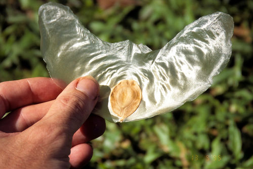<figcaption class="caption">A seed. <a href="http://commons.wikimedia.org/wiki/File:Alsomitra_macrocarpa_seed_%28syn._Zanonia_macrocarpa%29.jpg"> http://commons.wikimedia.org/wiki/File:Alsomitra_macrocarpa_seed_%28syn._Zanonia_macrocarpa%29.jpg </a></figcaption></figure><p/><hr/><hr/><hr/></div><div class="solution">
<p/><p>This seed is dispersed by wind. Learners may point out some of the following adaptations: This seed is large, but it is very light as the 'wings' are very thin, so that it can travel on the wind to be dispersed. The seed has 'wings' which help it move through the air like a helicopter. This helps it to move to a spot away from the parent tree so that it can grow somewhere else and not compete with the parent tree for space, water, etc. This also helps it to be lifted up by a draft of air, otherwise if it was just the small central brown seed without the wings, it would just fall directly down from the tree/plant.</p>
</div></div><div class="entry"><div class="problem">
<p>A Gr. 7 learner was trying to explain the process of the human reproduction cycle, but they muddled up the order of the cycle. Write numbers 1 - 6 to place their sentences below into the correct order. [3 marks]</p>

        
<p>_______ The sperm arrive in the oviduct.</p>

        
<p>_______ During sexual intercourse, the sperm is propelled from the penis.</p>

        
<p>_______ One sperm enters the outer cover of the egg to fertilise it.</p>

        
<p>_______ The fertilised egg is implanted in the uterine lining.</p>

        
<p>_______ The sperm travel from the vagina, through the uterus to the oviduct.</p>

        
<p>_______ The egg is released from the ovaries and travels along the oviduct.</p>

       </div><div class="solution">
<p/><p/>

        
<p><u>4</u> The sperm arrive in the oviduct.</p>

        
<p><u>2 or 1  </u>During sexual intercourse, the sperm is propelled from the penis.</p>

        
<p><u>5</u> One sperm enters the outer cover of the egg to fertilise it.</p>

        
<p><u>6</u>The fertilised egg is implanted in the uterine lining.</p>

        
<p><u>3</u> The sperm travel from the vagina, through the uterus to the oviduct.</p>

        
<p><u>1 or 2</u> The egg is released from the ovaries and travels along the oviduct.</p>

        
<p/>
</div></div><div class="entry"><div class="problem">
<p>Explain the difference between ovulation and menstruation. [2 marks] </p><hr/><hr/></div><div class="solution">
<p/><p>Ovulation: when the ovary releases a ripe egg cell into the fallopian tube.</p>

        
<p>Menstruation: when the blood-rich lining of the uterus and unfertilised egg cell is discarded through the vagina.</p>
</div></div><div class="entry"><div class="problem">
<p>Once an egg is fertilised, where is it implanted or embedded? [1 mark] </p><hr/></div><div class="solution">
<p/><p>In the blood-rich lining of the uterus.</p>
</div></div><div class="entry"><div class="problem">
<p>The reproductive organs are structured in a very specific way - to make fertilisation and pregnancy possible. Explain the function of each of these structures in the male and female bodies. [12 marks]</p>

         <table><tr><td><p><strong>Reproductive organs</strong></p></td><td><p><strong>Their function</strong></p></td></tr><tr><td><p>Ovaries</p></td><td><p/></td></tr><tr><td><p>Oviducts</p></td><td><p/></td></tr><tr><td><p>Uterus</p></td><td><p/></td></tr><tr><td><p>Vagina</p></td><td><p/></td></tr><tr><td><p>Penis</p></td><td><p/></td></tr><tr><td><p>Testes</p></td><td><p/></td></tr></table></div><div class="solution">
<p/><p/>

        <table><tr><td><p><strong>Reproductive organs</strong></p></td><td><p><strong>Their function</strong></p></td></tr><tr><td><p>Ovaries</p></td><td><p>Produces female sex hormones and stores, matures and releases ripe egg cells.</p></td></tr><tr><td><p>Oviducts</p></td><td><p>Transports the ripened egg cell from the ovary to the uterus; fertilisation takes place in the fallopian tubes (oviducts) so sperm swims from the uterus into the fallopian tube (oviduct).</p></td></tr><tr><td><p>Uterus</p></td><td><p>Once a month the lining of the uterus grows blood-rich and thick to allow the fertilised egg to implant in it and to grow an umbilical cord and placenta; uterus also undergoes strong contractions during childbirth.</p></td></tr><tr><td><p>Vagina</p></td><td><p>Muscular, elastic tube that can expand to hold the erect penis; sperm swim from the penis in the vagina to the uterus; it also allows the blood-thick lining of the uterus to be expelled once a month during menstruation; during childbirth it is the birth canal through which the baby travels and leaves the mother's body.</p></td></tr><tr><td><p>Penis</p></td><td><p>Can become erect (stiff and hard) to be placed into the vagina; ejaculates sperm in a liquid called semen; urine is also passed via the urethra.</p></td></tr><tr><td><p>Testes</p></td><td><p>Produce the male hormone; produces sperm that travel through different tubes to the penis from where it is ejaculated.</p></td></tr></table><p/>
</div></div><div class="entry"><div class="problem">
<p>During puberty the penis and testes develop and mature to fulfil their function in reproduction. Explain what changes occur and why these changes are necessary. [2 marks] </p><hr/><hr/></div><div class="solution">
<p/><p>The penis grows longer and slightly wider; it begins to ejaculate preparing for reproduction. The testes mature and start to produce sperm which can fertilise an egg.</p>
</div></div><div class="entry"><div class="problem">
<p>Explain what changes occur inside the ovaries of a girl during puberty and why these changes are important for reproduction. [2 marks] </p><hr/><hr/></div><div class="solution">
<p/><p>During puberty, the ovaries are stimulated to start maturing and releasing the eggs on a monthly basis. The fertilisation of a mature egg by a sperm cell  is needed for pregnancy to occur.</p>
</div></div><div class="entry"><div class="problem">
<p>A Gr. 7 learner was asked to define the terms puberty, menstruation, fertilisation, pregnancy and conception. First <strong>evaluate</strong> how well they defined each of these terms and then <strong>correct or improve</strong> their definitions in each case. [10 marks]</p>

        <table><tr><td><p><strong>Term and definition</strong></p></td><td><p><strong>Evaluation</strong></p></td><td><p><strong>Improvement</strong></p></td></tr><tr><td><p><strong>Puberty</strong>: when you grow up.</p></td><td><p/></td><td><p/></td></tr><tr><td><p><strong>Menstruation</strong>: when a girl bleeds.</p></td><td><p/></td><td><p/></td></tr><tr><td><p><strong>Fertilisation</strong>: when you put stuff into the garden to make it grow better.</p></td><td><p/></td><td><p/></td></tr><tr><td><p><strong>Pregnancy</strong>: when the mom's stomach grows and a baby pops out.</p></td><td><p/></td><td><p/></td></tr><tr><td><p><strong>Conception</strong>: when the baby starts to come alive.</p></td><td><p/></td><td><p/></td></tr></table></div><div class="solution">
<p/><p/>

        <table><tr><td><p><strong>Term and definition</strong></p></td><td><p><strong>Evaluation</strong></p></td><td><p><strong>Improvement</strong></p></td></tr><tr><td><p><strong>Puberty</strong>: when you grow up.</p></td><td><p>Vague and not accurate; you grow up from birth to adulthood.</p></td><td><p>Puberty is the time during childhood when the sex organs mature and the body undergoes various changes preparing it for reproduction.</p></td></tr><tr><td><p><strong>Menstruation</strong>: when a girl bleeds.</p></td><td><p>Vague, inaccurate - if a girl cuts or hurts herself she may also bleed but not as is meant here.</p></td><td><p>If there is no fertilisation, the female's blood-rich uterus lining and unfertilised egg are discarded through the vagina once a month.</p></td></tr><tr><td><p><strong>Fertilisation</strong>: when you put stuff into the garden to make it grow better.</p></td><td><p>Wrong context - that is called fertilise the garden.</p></td><td><p>When a male sperm cell fuses with a female egg cell.</p></td></tr><tr><td><p><strong>Pregnancy</strong>: when the mom's stomach grows and a baby pops out.</p></td><td><p>Inaccurate - it is not the stomach that grows, but the baby in the uterus. And a baby does not 'pop out'</p></td><td><p>The period (approximately 40 weeks) from conception to birth, where the foetus develops in the womb or uterus.</p></td></tr><tr><td><p><strong>Conception</strong>: when the baby starts to come alive.</p></td><td><p>Inaccurate - life starts for some at different points</p></td><td><p>The moment that fertilisation takes place when the male sperm fuses with the female egg cell and forms a new individual.</p></td></tr></table><p/>
</div></div></div></div>

<p>Total [55 marks]</p>

<p/>

<p/>

<p/>
</div></div>
      </div></div>